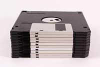
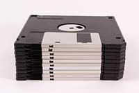

The man in the taupe blazer
You are an educated, successful person capable of abstract thought. A VP doing an SVP's job. Your office, appointed with decent furniture and a healthy amount of natural light (filtered through vertical blinds), is commensurate with nearly two decades of service to the craft of management.
Copper plaques on the wall attest to your various leadership abilities inside and outside the organization: One, the Partner in Innovation Banquet Award 2011, is from the sales team for your support in their 18-month effort to reduce sales cycle friction and increase net sales 6.5 percent; another, the Civic Guidelight 2008, is for overseeing a volunteer team that repainted a troubled public school top to bottom. *1
You have a reputation throughout the organization as a careful person, bordering on penny-pinching. The way you’d put it is, you are loath to disburse funds to support things that can’t be explained. You expect your staff to speak in plain language. This policy has served you well in many facets of operations, but it hasn’t served at all when it comes to anything involving software development.
For at least the last decade, some Internet thing comes along every two years and suddenly hundreds of thousands of dollars (turning into millions in the final tally) must be poured into ambiguous projects with variable deadlines. Content management projects, customer relationship management integration projects, mobile apps, paperless office things, global enterprise resource planning initiatives—no matter how tightly you clutch the purse strings, software finds ways to pry open your fingers.
Here we go again. On the other side of your (well-organized) desk sits this guy in his mid-30s with a computer in his lap. He’s wearing a taupe blazer. He’s come to discuss spending large sums to create intangible abstractions on a “website rearchitecture project.” He needs money, support for his team, new hires, external resources. It’s predestined that you’ll give these things to him, because the chief exec- 3 utive officer signed off on the initiative—and yet should it all go pear-shaped you’ll be responsible. Coders are insanely expensive, and there’s a tendency for projects that start with uncomfortably large budgets to grow from there. You need to understand where the hours will go.

He says: “We’re basically at the limits with WordPress.”
Who wears a taupe blazer?
The chief technology officer was fired six months ago. The former CTO has three kids in college and a mustache. It was a bad exit. The man in the taupe blazer (TMitTB) works for the new CTO. The new CTO comes from Adobe and has short hair and no mustache.
Here’s what you’ve been told: All of the computer code that keeps the website running must be replaced. One day it was very valuable and was keeping the company running, but the new CTO thinks it’s garbage. They tell you that the old code is spaghetti, your systems straining as a result. That the third-party services you use and pay for monthly are old and busted. Your competitor has an animated shopping cart that drives across the top of the screen at checkout. Its cart remembers everything its customers have ever purchased and generates invoices on demand. Your cart has no memory at all.
Salespeople stomp around your office, sighing like theater students, telling you how embarrassed they are by the site (their commissions are grandfathered in on Web orders; they take a personal interest). Nothing works right on mobile. Orders are cutting off halfway. People are logged out with no warning. Something must be done. That’s why TMitTB is here.
Who’s he, anyway? Webmaster? IT? No, he is “Scrum Master.”
“My people are split on platform,” he continues. “Some want to use Drupal 7 and make it work with Magento—which is still PHP.” He frowns. “The other option is just doing the back end in Node.js with Backbone in front.”
You’ve furrowed your brow; he eyes you sympathetically and explains.
“With that option it’s all JavaScript, front and back.”
Those are all terms you’ve heard. You’ve read the first parts of the Wikipedia pages and a book on software project estimation. It made sense at the time.
You ask the universal framing question: “Did you cost these options?”
He gives you a number and a date. You know in your soul the number is half what it should be and that the project will go a year over schedule. He promises long-term efficiencies, treats in the budget: The $85 grand in Oracle licenses will no longer be needed; engineering is moving to a free, opensourced database. “We probably should have done that back when we did the Magento migration,” he says. Meaning, of course, that his predecessor probably should have done that.
You consult a spreadsheet and remind him that the Oracle contract was renewed a few months ago. So, no, actually, that cost remains. You’ll keep paying.
This man—he makes a third less than you, and his education ended with a B.S. from a large, perfectly fine state university. But he has 500+ connections on LinkedIn. That plus sign after the “500” bothers you. How many more than 500 people does he know? Five? Five thousand?
In some way you don’t understand, he outranks you. Not within the company, not in restaurant reservations, not around lawyers. Still: He strokes his short beard; his hands are tanned; he hikes; his socks are embroidered with little ninjas.
“Don’t forget,” he says, “we’ve got to budget for apps.”
This is real. A Scrum Master in ninja socks has come into your office and said, “We’ve got to budget for apps.” Should it all go pear-shaped, his career will be just fine.
You keep your work in perspective by thinking about barrels of cash. You can jam about $100,000 worth of singles in a U.S. dry barrel. Next year, you’ll burn a little under a barrel of cash on Oracle. One barrel isn’t that bad. But it’s never one 5 barrel. Is this a five-barrel project or a ten-barreler? More? Too soon to tell. But you can definitely smell money burning.
At this stage in the meeting, you like to look supplicants in the eye and say, OK, you’ve given me a date and a budget. But when will it be done? Really, truly, top-line-revenue-reporting finished? Come to confession; unburden your soul. This time you stop yourself. You don’t want the inquiry to be met by a patronizing sigh of impatience or another explanation about ship dates, agile cycles, and continuous delivery. And you’ll still just have to fork over the money. Better for now to hide your ignorance. When will it be done? You are learning to accept that the answer for software projects is never.

1.1 Why Are We Here?
We are here because the editor of this magazine asked me, “Can you write me an essay about what code is?”
“No,” I said. “First of all, I’m not good at the math. I’m a programmer, but, look, I’m an East Coast programmer, not one of these giant serious platform people from the Bay Area. And, I mean where do you even start?”
I mean, where did I start? I began to program nearly 20 years ago, learning via oraperl, a special version of the Perl language modified to work with the Oracle database. A month into the work, I damaged the accounts of 30,000 fantasy basketball players. They sent some angry e-mails. After that, I decided to get better.
Which is to say I’m not a natural. I love computers, but they never made any sense to me. And yet, after some two decades of jamming information into my code-resistant brain, I’ve amassed enough knowledge that the computer has revealed itself. Its magic has been stripped away. I can talk to someone who used to work at Amazon.com or Microsoft about their work in detail without feeling a burning shame. I’d happily talk to people from Google and Apple, too, but they so rarely reenter the general population.
The World Wide Web is what I know best (I’ve coded for money in the programming languages Java, JavaScript, Python, Perl, PHP, Clojure, and XSLT), but the Web is only one small part of the larger world of software development. There are 11 million professional software developers on earth, according to the research firm IDC (an additional 7 million are hobbyists). That’s roughly the population of the greater Los Angeles metro area. Imagine all of L.A., programming. East L.A. would be for Mac programmers, West for mobile, Beverly Hills for finance programmers, and all of Orange County for Windows.
There are lots of other neighborhoods, too: There are people who write code for embedded computers smaller than your thumb. There are people who write the code that runs your TV. There are programmers for everything. They have different cultures, different tribal folklore, that they use to organize their working lives. If you told me a systems administrator was taking a juggling class, that would make sense, while I’d expect a product manager to take a trapeze class. I’ve met information architects who list and rank their friendships in spreadsheets. Security research specialists love to party.
What I’m saying is, I’m one of 18 million. So that’s what I’m writing: My view of software development, as an individual among the millions. I’m writing for those not among the 18 million who find themselves in the middle of a world that’s being overtaken by successive waves of software.
Every month it becomes easier to do things that have never been done before, to create new kinds of chaos and find new kinds of order. Even though my math skills will never catch up, I love the work. Every month, code changes the world in some


What is a computer?
A computer is a clock with benefits. They all work the same, doing second-grade math, one step at a time: Tick, take a signal and put it in box one. Tick, take another signal, put it in box two. Tick, operate (an operation might be addition or subtraction) on those two signals and put the resulting signal in box one. Tick, check if the result is zero, and if it is, go to some other box and follow a new set of instructions.
You, using a pen and paper, can do anything a computer can; you just can’t do those things billions of times per second. And those billions of tiny operations add up. They can cause a phone to boop, elevate an elevator, and redirect a missile. That raw speed makes it possible to pull off not one but multiple sleights of hand, card tricks on top of card tricks. Take a bunch of pulses of light reflected from an optical disc, apply some math to unsqueeze them, and copy the resulting pile of expanded impulses into some memory cells—then read from those cells to paint light on the screen. Millions of pulses, 60 times a second. That’s how you make the rubes believe they’re watching a movie.
Apple has always made computers; Microsoft used to make only software (and occasional peripheral hardware, such as mice and keyboards), but now it’s in the hardware business, with the Xbox game consoles, Surface tablets, and Lumia phones. Facebook assembles its own computers for its massive data centers.
So many things are computers, *** or will be. That includes watches, cameras, air conditioners, cash registers, toilets, toys, airplanes, and movie projectors. Samsung makes computers that look like TVs, and Tesla makes rolling computers that look like cars. Some things that aren’t yet computers—coffee mugs, flashlights—will fall eventually.
When you “batch” process a thousand images in Photoshop or sum numbers in Excel, you’re programming, at least a little. When you use computers too much—which is to say, the normal amount—they start to get into you. I’ve had Photoshop dreams, Visio dreams, spreadsheet dreams, and Web browser dreams. The dreamscape becomes fluid and can be sorted and restructured. I’ve had programming dreams where I move text around the screen. Sometimes people in the dreams point to bits of code.
You can make computers do wonderful things, but you need to understand their limits. They’re not all-powerful, not conscious in the least. They’re fast, but some parts—the processor, the RAM—are faster than others—like the hard drive, or the network connection. Making them seem infinite takes a great deal of work from a lot of programmers and a lot of marketers.
The turn-of-last-century British artist William Morris once said you can’t have art without resistance in the materials. The computer and its multifarious peripherals are the materials. The code is the art.
2.1 How do you type an “a”?
Consider what happens when you strike a key on your keyboard. Say a lowercase “a.” The keyboard is waiting for you to press a key, or release one; it’s constantly scanning to see what keys are pressed down. Hitting the key sends a “scancode.”
Just as the keyboard is waiting for a key to be pressed, the computer is waiting for a signal from the keyboard. When one comes down the pike, the computer interprets it and passes it farther into its own interior. “Here’s what the keyboard just received— do with this what you will.”
It’s simple now, right? The computer just goes to some table, figures out that the signal corresponds to the letter “a,” and puts it on screen. Of course not; too easy. Computers are machines. It doesn’t know what a screen is, or an “a.” To put the “a” on the screen, your computer has to pull the image of the “a” out of its memory as part of a font, an “a” made up of lines and circles. It has to take these lines and circles and render them in a little box of pixels, in the part of its memory that manages the screen. So far we have at least three representations of one letter: The signal from the keyboard; the version in memory; and the lines-and-circles version sketched on the screen. We haven’t even considered how to store it, what happens to the letters to the left and the right when you insert an “a” in the middle of a sentence. Or what “lines and circles” means when reduced to binary data. There are surprisingly many ways to represent a simple “a.” It’s amazing any of it works at all.
Coders are people willing to work backward to that key press. Maybe not all the way to the scancode coming from the keyboard, but they need to be able to understand how the behavior of items on screens comes to be; that beneath the tiny rectangle that contains the “a” is a large set of rules and assumptions. It takes a certain temperament to page through standards documents, manuals, and documentation and read things like “data fields are transmitted least significant bit first,” in the interest of understanding why, when you expected “ü,” you keep getting “ .”
2.2 What is hardware? What is software?
Hardware is a tricky business. For decades the work of integrating, building, and shipping computers was a way to build fortunes. But margins tightened. Look at Dell, now back in private hands, or Gateway, acquired by Acer. Dell and Gateway, two world-beating companies, stayed out of software, typically bundling Microsoft Windows—plus various subscription-based services to increase profits.
This led to much cursing from individuals who’d spent $1,000 or more on a computer and now had to figure out how to stop the antivirus software from nagging them to pay up.

Years ago, when Apple was dying and Microsoft was king, Steve Ballmer, sweating through his blue button-down, jumped up and down in front of a stadium full of people and chanted, “Developers! Developers! Developers! Developers!”
He yelled until he was hoarse: “I love this company!” Of course he did. If you can sell the software, if you can light up the screen, you’re selling infinitely reproducible nothings. The margins on nothing are great, until other people start selling even cheaper nothings or giving them away. Which is what happened, as free software-based systems such as Linux began to nibble, then devour, the server market, and free-to-use Web-based solutions such as Google Apps began to serve as viable replacements for desktop software.
Much hardware comes with some software—a PC comes with an operating system for example, and that OS has hundreds of subprograms, from mail apps to solitaire. Expectations around software have changed over time. IBM unbundled software from hardware in the 1960s and got to charge more; Microsoft rebundled Internet Explorer with Windows in 1998 and got sued; Apple initially refused anyone else the ability to write software for the iPhone when it came out in 2007, and then opened the App Store, and soon the world had Angry Birds.
There have been countless attempts to make software easier to write, promising that you could code in plain English, or by manipulating a set of icons, or by making a list of rules—software development so simple that a bright senior executive or average child could do it. Decades of efforts have gone into helping civilians write code as they 11 might use a calculator or write an e-mail. Nothing yet has done away with developers, developers, developers, developers.
Thus a craft, and a professional class that honors that craft, has emerged. Starting in the 1950s, but catching fire in the 1980s, a proportionally small number of people became adept at inventing ways to satisfy basic human desires (know the time, schedule a flight, send a letter, kill a zombie) by controlling the machine. Coders, starting with concepts such as “signals from a keyboard” and “numbers in memory,” created infinitely reproducible units of digital execution that we call software, hoping to meet the needs of the marketplace. Man, did they. The systems they built are used to manage the global economic infrastructure.*** If coders don’t run the world, they run the things that run the world.
Most programmers aren’t working on building some widely recognized application like Microsoft Word. Software is everywhere. It’s there when you switch channels and your cable box shows you what else is on. You get money from an ATM—software. An elevator takes you up five flights of stairs, the same. Facebook ships software every day to something like a billion people, and that software runs inside Web browsers or mobile applications. Facebook looks like it’s just pictures of your mom’s crocuses or your son’s school play, but no: It’s software. Etsy and EBay, too. Increasingly software isn’t something separate from life but something omnipresent, familiar, and invisible.

2.3 How Does Code Become Software?
We know that a computer is a clock with benefits, and that software starts as code, but how?
We know that someone, somehow, enters a “program” into the computer and the program is made of “code.” In the old days, that meant putting holes in punch cards.
Then you’d put the cards into a box and give them to an operator who would load them, and the computer would flip through the cards, identify where the holes were, and update parts of its memory, and then it would—OK, a little too far back. Let’s talk about modern typing-into-a-keyboard code. It might look like this:
(~R← R←.×R)/R←1←←R
That’s in the programming language APL, which stands for “A Programming Language.”*** It will print out all the prime numbers from 1 to 1,000, should you have urgent need of them. APL isn’t the most common programming language, maybe because it’s so squiggly and requires a special keyboard. So how else might your code look?
Maybe like so, in Excel (with all the formulas hidden away under the numbers they produce, and a check box that you can check):

But Excel spreadsheets are tricky, because they can hide all kinds of things under their numbers; they’re amazing, but they’re opaque. Programming can also look like Scratch, a language for kids:

That’s definitely programming right there— the computer is waiting for a click, for some input, just like it waits for you to type an “a,” and then it’s doing something repetitive, and it involves hilarious animals.
Or maybe:
END
That’s in Fortran. The reason it’s not working is that you forgot to put a quotation mark at the end of the first line. Try a little harder, thanks.
All of these things are coding of one kind or another, but the last bit is what most programmers would readily identify as “code.” A sequence of symbols (using typical keyboard characters, saved to a file of some kind), that someone typed in, or copied, or cut-and-pasted from elsewhere. That doesn’t mean the other kinds of coding aren’t valid or won’t help you achieve your goals. But coding is a broad human activity, like “sport,” or “writing.” When software developers think of coding most of them are thinking about lines of code in files. They’re handed a problem, think about the problem, write code that will solve the problem, and then expect the computer to turn word into deed.
Code is inert. How do you make it ert? You run software that transforms it into machine language. The word “language” is a little ambitious here, given that you can make a computing device with wood and marbles.*** Your goal is to turn your code into an explicit list of instructions that can be carried out by interconnected logic gates.*** Thus, turning your code into something that can be executed—software.
A compiler is software that takes the symbols you typed into a file and transforms them into lower-level instructions, until eventually you’ve compiled all the way down to instructions for the logic gates.
Imagine a programming language called Business Operating Language United System, or Bolus. It’s a terrible language that will have to suffice for a few awkward paragraphs. It has one real command, PRINT. We want it to print HELLO NERDS on our screen. To that end, we write a line of code in a text file that says:
And we save that as nerds.bol. Now we run gnubolus nerds.bol, our imaginary compiler program. It goes character by character, starting with the “p”, looking for patterns, and saving them into our one-dimensional tree boxes. Let’s be the computer.
| Token | Meaning |
|---|---|
| P | Hmmmm...? |
| R | Someone say something? |
| I | I'm waiting... |
| N | [drums fingers] |
| T | Any time now... |
| Space | Ah, "PRINT" |
| { | String coming! |
| H | These |
| E | letters |
| L | don't |
| L | matter |
| O | La |
| Space | La |
| N | just |
| E | saving |
| R | them |
| D | for |
| S | later |
| } | Stringtime is over! |
| End of file | Time to get to work. |
The goal of parsing is to take arbitrary code and find patterns, so that the compiler can expand those patterns into machine code that makes the computer go. So after tokenizing—cutting the words into pieces— the Bolus compiler makes a little tree. Kind of like a sentence diagram. Except instead of nouns, verbs, and adjectives, the computer is looking for functions and arguments. Our program above, inside the computer, becomes:

Trees are a really pleasant way of thinking of the world. Your memo at work has sections that have paragraphs? Tree. Your e-mail program contains messages that contain subject lines and addresses? Tree. Your favorite software program that has a menu bar with individual menu items that have sub-menu items? Tree. Every day is Arbor Day in Codeville.
Of course it’s all a lie. If you cut open a computer you’ll find countless little boxes in rows, places where you can put and retrieve bytes. Everything ultimately has to get down to things in little boxes pointing to each other. That’s just how things work. So that tree is actually more like:

Every character truly, truly matters. Every single stupid misplaced semicolon***, space where you meant tab, bracket instead of a parenthesis, every file that doesn’t end with a newline when one is expected, every misplaced null—mistakes can leave the computer in a state of panic. The trees don’t know where to put their leaves. Their roots decay. The boxes don’t stack neatly. For not only are computers dumb as a billion marbles, they’re positively Stradivarian in their delicacy.
The thread was finally shut down in March 2014, but its legacy remains as a warning to us all.
What the hell, we’re here. Let’s go all the way. We’ve got our tree. Our compiler program can go through the tree and expand what it finds into executable machine code. And as a result, after a lot of fully acknowledged hand-waving, we’ll have a working program, written to the disk, that we can run any time we want, as often as we want. But what will it actually do? Well, when it’s compiled into code that can run on our totally imaginary Businesstron 5000 computer, that code will (take a breath):
- 1. Jam the “HELLO NERDS” string into boxes known as memory, starting at position 0, using the operation jam-the-string-in-memory.
- 2. Put another 0 in a special memory box that we’ll call the COUNTER, using the operation go-set-a-counter.
- 3. Use the operation get-a-specificcharacter-from-memory-and-checkit-if-exists, feeding it the argument COUNTER.
- a. If a character does exist, put that in a little box called a register.
- b. If it doesn’t, call it a day, because we are FINISHED, please ignore everything that follows, thanks.
- 4. Execute the operation dump-thecharacter-in-the-register-to-thescreen.
- 5. Execute the operation add-one-tocounter, then go back to step 3, and repeat it.***
So we have done a horrible, stupid amount of work*** to get a superfake computer to print HELLO NERDS. You could write those words out by hand in less time, twenty times. Why on earth bother?
First, that same process of going character-by-character can be wrapped up into a routine, a function, a method, sub-routine, component. (Little in computing has a single, reliable name, which means everyone is always arguing over semantics.) And that routine can be run as often as you need. Second, you can print anything you wish, not just one phrase. Third, you can repeat the process forever, and nothing will stop you until the heat death of the universe. Obviously no one besides Jack Nicholson in The Shining really needs to keep typing the same phrase over and over, and even then it turned out to be a bad idea.
A history of input media:
 

Instead of worrying about where the words live in memory and having to go character by character, programming languages let you think of things like strings, arrays, and trees. That’s what coding gives you. You may look over a programmer’s shoulder and think the code looks complex and boring but it’s covering up repetitive boredom that’s unimaginably vast.***
This thing we just did with individual characters, compiling a program down into a fake assembly language so that the nonexistent computer can print each character one at a time? The same principle applies to every pixel on your screen, every frequency encoded in your MP3 files, and every imaginary cube in Minecraft. Computing treats human language as an arbitrary set of symbols in sequences; it treats music, imagery, and film that way, too.
It’s a good and healthy exercise to ponder what your computer is doing right now. Maybe you’re reading this on a laptop screen: What are the steps and layers between what you’re doing and the Lilliputian mechanisms within? When you double-click an icon, for example, to open a program like a word processor, the computer must know where that program is on the disk. It has some sort of accounting process to do that. And then it loads that program into its memory—which means that it loads an enormous to-do list into its memory and starts to step through it. What does that list look like?
Maybe you’re reading this in print. No shame in that. The paper is the artifact of digital processes. Remember how we put that “a” on-screen? See if you can get from some sleepy writer typing that letter on a keyboard in Brooklyn, N.Y., to the paper under your thumb. What framed that fearful symmetry?***
Thinking this way will teach you two things about computers: One, there’s no magic,*** no matter how much it looks like there is. There’s just work to make things look like magic.*** And two, it’s crazy in there.
2.4 What Is an Algorithm?
“Algorithm” is a word writers invoke to sound really smart about technology. Journalists tend to talk about “Facebook’s algorithm” or a “Google algorithm,” which is inaccurate and meaningless. They mean “software.”
Algorithms don’t require computers any more than geometry does. An algorithm solves a problem, and a great algorithm gets a name. Djikstra’s algorithm, after the famed computer scientist Edsger Dijkstra, finds the shortest path in a graph. By the way, “graph” here doesn’t mean  but rather
but rather 
Think of a map; streets connect to streets at intersections. It’s a graph! There are graphs all around you. Plumbing, electricity, code compilation, social networks, the Internet, all can be represented as graphs! (Now to monetize.)
There are many algorithms with their own pages on Wikipedia. You can spend days poking around them in wonder. Euclid’s algorithm, for example, is one of the go-to specimens that shows up whenever anyone wants to wax on about algorithms, so why buck the trend? It’s a simple way of determining the greatest common divisor for two numbers. Take two numbers, like 16 and 12. Divide the first by the second. If there’s a remainder (in this case there is, 4), divide the first, 16, by that remainder, 4, which gives you 4 and no remainder, so we’re done—and 4 is the greatest common divisor. (Now translate that into machine code and we can get out of here.)
There’s a site called Rosetta Code that shows you different algorithms in different languages. The Euclid’s algorithm page is great. Some of the examples are suspiciously long and laborious, and some are tiny nonsense poetry, like this one, in the language Forth:
begin dup while tuck mod
repeat drop ;
Read it out loud, preferably to friends. Forth is based on the concept of a stack, which is basically a special kind of list. You make “words” that do things on the stack, building up a little language of your own. PostScript,◼9 the language of laser-printers, came after Forth but is much like it. Look at how similar the code is, give or take some squiggles:
{0 gt} {dup rup mod} {pop exit} ifte
} loop }.
And that’s Euclid’s algorithm in PostScript. I admit, this might be fun only for me. Here it is in Python (all credit due to Rosetta Code):

Dijkstra distributed a remarkable and challenging set of 18 memos to the global computer science community, starting in the 1960s and continuing up until his death in 2002, known as “EWDs,” many of them handwritten.
A programming language is a system for encoding, naming, and organizing algorithms for reuse and application. It’s an algorithm management system. This is why, despite the hype, it’s silly to say Facebook has “an algorithm.” An algorithm can be translated into a “function,” and that function can be “called” when software is executed. There are algorithms that relate to image-processing or for efficiently storing data, or rapidly traversing the elements of a list. Most algorithms come for free, already translated and built into a programming language, or are available, organized into “libraries,” for download from the Internet in a moment. You can do a ton of programming without actually thinking about algorithms—you can save something into a database or print a Web page by cuttingand-pasting code. But if you want to, say, identify the language used in a block of text, you’ll need to write and invoke a languagematching function, and you might end up having to read the code of that function to understand and modify it to your purposes. So in that sense algorithms can be very pure, mathematical entities as well as practical expressions of ideas upon which you can place your grubby hands.
One thing that took me forever to understand is that computers aren’t actually “good at math.” They can be programmed to execute certain operations to certain degrees of precision, so much so that it looks like “doing math” to humans. Dijkstra said: “Computer science is no more about computers than astronomy is about telescopes.”*** A huge part of computer science is about understanding the efficiency of algorithms—how long they will take to run. Computers are fast, but there are some ways in which they are very slow; they can get very caught up—for example, finding the shortest path between two points on a large map. Companies like Google, Facebook, and Twitter are built on top of fundamental computer science *** and pay great attention to efficiency, because their users do things (searches, status updates, tweets) an extraordinary number of times. Thus it is absolutely worth their time to find excellent computer scientists, many with doctorates, who know where all the efficiency is buried.
It takes a good mathematician to be a computer scientist, but a middling one to be an effective programmer. Until you start dealing with millions of people on a network or you need to blur or sharpen a million photos quickly, you can just use the work of other people. When it gets real, break out the comp sci. When you’re doing anything a hundred trillion times, inefficiencies add up. Systems slow down, users get cranky, money burns by the barrel.***
The hardest work of programming is getting around things that aren’t computable, in finding ways to break down impossible tasks into small, possible components, then creating the impression that the computer is doing something it actually isn’t, like having a human conversation. This used to be known as “artificial intelligence research,” but now it’s more likely to go under the name “machine learning” or “data mining.” When you speak to Siri or Cortana and they respond, it’s not because these services understand you; they convert your words to text and break that text into symbols, then match those symbols against the symbols in their database of terms and produce an answer using templates. Tons of algorithms, bundled up and applied, mean that computers can fake listening.
A programming language has at least two jobs, then. It needs to wrap up lots of algorithms so that they can be reused, so you don’t need to go looking for a square-root algorithm (or a genius programmer) every time you need a square root. And it has to make it easy for programmers to wrap up new algorithms and routines into functions for reuse. The “DRY principle,” for “don’t repeat yourself,” is one of the tenets of programming. That is, you should name things once, do things once, create a function once, and let the computer repeat itself. This doesn’t always work. Programmers repeat themselves constantly. I’ve written certain kinds of code a hundred times. This is why DRY is a principle.
Enough talk. Let's code!
2.5 The Sprint
After a few months the budget is freed up and the Web rearchitecture project is under way. They give it a name: Project Excelsior. Fine. TMitTB (who, to be fair, has other clothes) checks in with you every week.
He brings documents. Every document has its own name. The functional specification is a set of at least a thousand statements about users clicking buttons. “Upon accessing the Web page the user if logged in will be identified by name and welcomed and if not logged in will be encouraged to log in or create an account (see user registration workflow).”
God have mercy on our souls. From there it lists various error messages. It’s a sort of blueprint in that it describes—in words, with occasional diagrams—a program that does not exist.
Some parts of the functional specification refer to “user stories.” You’re seeing those as well. User stories are tiny hypothetical narratives about people using the site, e.g., “As a visitor to the website I want to search for products so that I can quickly purchase what I want.”
Then there’s something TMitTB calls “wireframe mock-ups,” which are pictures of how the website will look, created in a program that makes everything look like it was sketched by hand, all a little squiggly— even though it was produced on a computer. This is so no one gets the wrong ideas about these ideas-in-progress and takes them too 21 seriously. Patronizing, but point taken.
You rarely see TMitTB in person, because he’s often at conferences where he presents on panels. He then tweets about the panels and notes them on his well-populated LinkedIn page. Often he takes a picture of the audience from the stage, and what you see is an assembly of mostly men, many with beards, the majority of whom seem to be peering into their laptops instead of up at the stage. Nonetheless the tweet that accompanies that photo says something like, “AMAZING audience! @ the panel on #microservice architecture at #ArchiCon2015.”
He often tells you just how important this panel-speaking is for purposes of recruiting. Who’s to say he is wrong? It costs as much to hire a senior programmer as it does to hire a midlevel executive, so maybe going to conferences is his job, and in the two months he’s been here he’s hired four people. His two most recent hires have been in (1) Boston; and (2) Hungary; neither of which is a place where you have an office.
But what does it matter? Every day he does a 15-minute “standup” meeting via something called Slack, which is essentially chat but with some sort of plaid visual theme, and the programmers seem to agree that this is a wonderful and fruitful way to work.
“I watch the commits,” TMitTB says. Meaning that every day he reviews the code that his team checks in to version control to make sure that it’s well organized. “No one is pushing to production without the tests passing. We’re good.”
Once, several years ago, you tried to do regularly scheduled standups, but they went for hours, with 13 people arranged around a table—sitting down. You wonder how he gets his programmers to stand up but then some of them already use standing desks. Perhaps that’s the ticket.
Honestly, you would like to go to conferences sometimes and be on panels. You could drink bottled water and hold forth just fine.
2.6 What Role Does the Conference Play in Code Culture?
Conferences! The website Lanyrd lists hundreds of technology conferences for June 2015.● There’s an event for software testers in Chicago, a Twitter conference in São Paulo, and one on enterprise content management in Amsterdam. In New York alone there is the Big Apple Scrum Day, the Razorfish Tech Summit, an entrepreneurship boot camp for veterans, a conference dedicated to digital mapping, many conferences for digital marketers, one dedicated to Node.js, one for Ruby, and one for Scala, a couple of breakfasts, a conference for cascading style sheets, one for text analytics, and something called the “Employee Engagement Awards.”
They look like you’d expect. Tons of people at a Sheraton, keynote in Ballroom D. Or enormous streams of people wandering through South by Southwest in Austin. People come together in the dozens or thousands and attend panels, ostensibly to learn; they attend presentations and brush up their skills, but there’s a secondary conference function, one of acculturation. You go to a technology conference to affirm your tribal identity, to transfer out of the throng of dilettantes and into the zone of the professional. You pick up swag and talk to vendors, if that’s your thing.***
Technology conferences are where primate dynamics can be fully displayed, where relationships of power and hierarchy can be established. There are keynote speakers—often the people who created the technology at hand or crafted a given language—there are the regular speakers, often paid not at all or in airfare, who present some idea or technique or approach. Then there are the panels, where a group of people are lined up in a row and forced into some semblance of interaction while the audience checks its e-mail.
I’m a little down on panels. They tend to drift. I’m not sure why they exist.
Here’s the other thing about technology conferences: There has been much sexual harassment. And much sexist content in the conferences. Which is surprising because computers are dumb rocks lacking genitalia, but there you have it.
Women in software, having had enough, started to write it up, post it to blogs. Other women did the same. The problem is pervasive: There are a lot of conferences, and there is a lot of sexual harassment. The language Ruby, the preferred language for startup bros, developed the worst reputation. At a Ruby conference in 2009, someone gave a talk subtitled “Perform Like a Pr0n Star,” with sexy slides. That was dispiriting. And there have been criminal incidents, too.
Conferences began to develop codes of conduct, rules and algorithms for people (men, really) to follow. This is a community that needs an awful lot of rules.
If you are subject to or witness unacceptable behavior, or have any other concerns, please notify a community organizer as soon as possible ...
—Burlington Ruby Conference
php[architect] is dedicated to providing a harassment-free event experience for everyone and will not tolerate harassment or offensive behavior in any form.
—php[architect]
The Atlanta Java Users Group (AJUG)
is dedicated to providing an outstanding conference experience for all attendees, speakers, sponsors, volunteers,
and organizers involved in DevNexus (GeekyNerds) regardless of gender, sexual orientation, disability, physical appearance, body size, race, religion, financial status, hair color (or hair amount), platform preference, or text editor of choice.
—devnexus
Harassment includes offensive verbal comments related to gender, age, sexual orientation, disability, physical appearance, body size, race, religion, sexual images in public spaces, deliberate intimidation, stalking, following, harassing photography or recording, sustained disruption of talks or other events, inappropriate physical contact, and unwelcome sexual attention.
—Clojure/conj code of conduct
Developers being developers, there are opensourced codes of conduct that can be used and modified, at confcodeofconduct.com/.
It seemed that once people started talking about conference behavior, they began to talk about the larger problems of programming culture. This had been a problem, but the conference issues gave people a point of common reference. Why were there so many men in this field? Why do they behave so strangely? Why is it so hard for them to be in groups with female programmers*** and behave in a typical, adult way?
“I go to work and I stick out like a sore thumb. I have been mistaken for an administrative assistant more than once. I have been asked if I was physical security (despite security wearing very distinctive uniforms),” wrote a black woman who has worked, among other places, at Google.
“Always the only woman in the meeting, often the first—the first female R&D engineer, first female project lead, first female software team lead—in the companies I worked for,” wrote another woman in Fast Company magazine.
Famous women in coding history
Ada Lovelace: The first programmer. She devised algorithms for Charles Babbage’s “analytical engine,” which he never built
 Grace Murray Hopper: World War II hero and inventor of the compiler
Grace Murray Hopper: World War II hero and inventor of the compiler
Young women are a fifth as likely to consider a technology-related career than young men, according to WHERE TK. Less than 30 percent of the people in computing are women. And the number of women in computing has been falling since the 1980s, even as the market for their skills has expanded. The pipeline is a huge problem. And yet it’s not unsolvable. I’ve met managers who have built perfectly functional large teams that are more than half female coders. Places such as the handcrafts e-commerce site Etsy have made a particular effort to develop educational programs and mentorship programs. Organizations such as the not-for-profit Girl Develop It teach women, and just women, how to create software.
It’s all happening very late in the boom, though. In 2014 some companies began to release diversity reports for their programming teams. It wasn’t a popular practice, but it was revealing. Intel is 23 percent female; Yahoo! is 37 percent. Apple, Facebook, Google, Twitter, and Microsoft are all around 30 percent. These numbers are for the whole company, not the programmers. The numbers on people who aren’t white or Asian are worse yet. Apple just gave $50 million to fund diversity initiatives, equivalent to 0.00007 percent of its market cap. Intel has a $300 million diversity project. That’s a lot of women who didn’t get stock options.
The average programmer is moderately diligent, capable of basic mathematics, has a working knowledge of one or more programming languages, and can communicate what he or she is doing to management and his or her peers. Given that a significant number of women work as journalists and editors, perform surgery, run companies, manage small businesses, use spreadsheets, and that a few even serve on the Supreme Court, and that we are no longer surprised to find women working as accountants, professors, statisticians, or project managers, it’s hard to imagine that they can’t write JavaScript. Programming, despite the hype and the self-serving fantasies of programmers the world over, isn’t the most intellectually demanding task imaginable.
Which leads one to the inescapable conclusion: the problem with women in technology isn’t the women.

Why Are Programmers Such Language Partisans?
Many conferences are organized around specific programming languages or specific communities (PyCon for python programmers; the Strata conference for big data; Oscon for open-source coders); these are ritual events for people in those community. People gather together, talk, and then the videos are posted on YouTube. Language matters
Programmers track the success of computer languages the way other people track sports rankings, commenting on Web forums such as Reddit (where many languages get their own “subreddit,” and reddit.com/r/ programming has 613,000 readers), or Hacker News, run by the venture capital firm Y Combinator (a company named after a special kind of function that operates on other functions), or Lambda the Ultimate (named after a series of papers written mostly in the 1970s about the very influential programming language Scheme—the more inside-baseball the name, the nerdier the subject matter.)
There are hundreds of other programming blogs.*** Many large corporations let their engineers blog (a generous gift given how many recruiters are hovering). There are discussions about programming going on everywhere, in public, at all times, about hundreds of languages. There is a keen sense of what’s coming up and what’s fading out.
It’s not simply fashion; your career as a programmer depends on demonstrating capacity in one or more language. So there are rankings, frequently updated, rarely shocking. As of April 15, the world’s most-used computer languages, according to the Tiobe index (which uses a variety of indicators to generate a single view of the world of programming) are Java, C, C++, Objective-C, and C#, followed by JavaScript, PHP, and Python. The rankings are necessarily inexact; another list, by a consulting firm called RedMonk, gives JavaScript the top spot, followed by Java. There are many possible conclusions here, but the obvious one is that, all things being equal, a very good Java programmer who performs well in interviews will have more career options than someone using a more obscure language.
By the time a language breaks through to the top 10 or 20, if you code, you’ve heard of it, read blog posts about it, heard people lament how terrible or wonderful or misguided it is,*** possibly watched a few video tutorials, or played with it a little. Taking new languages out for a spin is a good thing for a programmer to do. Often all you have to do is download some files and write a couple lines of code, then decide if you want to go further. Most languages are free software.
P
y
thon
Visual
B
asic
Uni
t
ed
C+
+
11
C
WordPress
M
e
xico
(PHP)
St
a
t
es
And
r
oid
G
r
eece
Indonesia
P
aki
s
tan
F
r
ance
Spain
South
A
fri
c
a
Nor
w
a
y
P
ortugal
R
ussia
Sw
eden
P
oland
Canada
C
z
ech
Germa
n
y
R
epublic
A
u
s
tria
I
r
eland
T
ur
k
e
y
China
N
e
w
Z
ealand
B
elgium
B
r
azil
Finland
A
r
ge
n
tina
I
r
an
Uk
r
aine
Node
.
js
AngularJS
iOS
C#
R
u
b
y
Why do people construct and then give away free languages? Well, the creation of a good computer language is the work of an apex programmer. To have produced a successful language is acknowledged as a monumental effort, akin to publishing a multivolume history of a war, or fighting in one. One is paid in glory.
Changing an extant language is like fighting that war all over again, and some languages have at times been trapped in a liminal state between their old, busted selves, and their new, promised version. Perl 5, released in the mid-1990s, was a language uniquely suited to the World Wide Web, and it grew as the Web grew; Perl 6 was supposed to be better in every way and design began with grand pronouncements in 2000. But after 15 years of people working continually and often for free on a project they consider in the public interest, there’s still no Perl 6 version 1.0. (Latest ETA: Christmas 2015.)
The Python language community, keenly aware of the Perl community’s problems, decided to make necessary but difficult changes to the language as part of the transition from version 2 to version 3. They would modernize, clean up rough edges—but avoid grand reinventions. Development of Python 3.o started in 2006; the first working version came out in 2008; and in 2015, the transition is still ongoing.
Making a new language is hard. Making a popular language is incredibly hard and requires the smile of fortune. And changing the way a popular language works appears to be one of the most difficult things humans can do, requiring years of coordination to make the standards align. Languages are large, complex, dynamic expressions of human culture.
3.1 The Beauty of the Standard Library
The true measure of a language isn’t how it uses semicolons; it’s the standard library of each language. A language is software for making software. The standard library is a set of pre-made software that you can reuse and reapply.
Take Python, which is “batteries included,” meaning that it comes with tons of preexisting code, organized into “modules,” that you can reuse. Its standard library has functions that let you pull data from the Internet and functions to process text.
What does that mean, to process text? Well you might have a string of text (“the quick brown fox”) and save it in a variable called my_string. So now you can call standard methods on that string. You can say my_ string.lower() and it will make all the words lowercase, producing “the quick brown fox.”
Truly understanding a language’s standard library is one of the ways one becomes proficient in that language. Typically you just read up on all the modules, visiting Web pages or reading a book.
But the standard library is the beginning. For many languages—and Python is exemplary—there’s an enormous library of prewritten modules available for nearlyinstantaneous download, using “package manager” software. A module (or library, or package) is code that is intended to extend a language’s capabilities.
Let’s say you need to process through 100,000 pictures and scale and sharpen them.
You type one command: sudo pip install Pillow, and the module is downloaded, compiled automatically, and placed into the correct directory for later reuse. You have to know, of course, that most modern languages have modules for image processing; you also need to know that Pillow is the most commonly used image-processing toolkit that you need to download, and knowing how to find that out is part of the job of coding. You might learn it by Googling. You might ask a friend. You might get that information out of a book, or a website like “The Hitchhiker’s Guide to Python!”
A coder needs to be able to quickly examine and identify which giant, complex library is the one that’s the most recently and actively updated and the best match for his or her current needs. A coder needs to be a good listener.
But what a payoff! Now that Pillow is installed you have, at your typing fingertips, dozens of routines and functions related to image-processing that you can use in your code: Change colors, rotate by a number of degrees, scale, convert GIF images to JPEG, and so forth. Or if you need to do very complex numerical analysis and statistics work, then you can download NumPy, and suddenly an enormous range of mathematical algorithms are available to you, hundreds of years of science and research boiled down. Audio processing, interacting with peculiar hardware, speaking to databases— there are packages for all of these things. But you need to know how to find them, what they are called. This is part of learning the language.
install Pillow, and the module is downloaded, compiled automatically, and placed into the correct directory for later reuse. You have to know, of course, that most modern languages have modules for image processing; you also need to know that Pillow is the most commonly used image-processing toolkit that you need to download, and knowing how to find that out is part of the job of coding. You might learn it by Googling. You might ask a friend. You might get that information out of a book, or a website like “The Hitchhiker’s Guide to Python!”
A coder needs to be able to quickly examine and identify which giant, complex library is the one that’s the most recently and actively updated and the best match for his or her current needs. A coder needs to be a good listener.
But what a payoff! Now that Pillow is installed you have, at your typing fingertips, dozens of routines and functions related to image-processing that you can use in your code: Change colors, rotate by a number of degrees, scale, convert GIF images to JPEG, 1 and so forth. Or if you need to do very complex numerical analysis and statistics work, then you can download NumPy, and suddenly an enormous range of mathematical algorithms are available to you, hundreds of years of science and research boiled down. Audio processing, interacting with peculiar hardware, speaking to databases— there are packages for all of these things. But you need to know how to find them, what they are called. This is part of learning the language.
3.2 What do different languages do?

If all the languages do the same thing (make the computer go) then why does it matter which you choose? For the same reason that you don’t take a bicycle to pick up a fridge or get a physical from a neurosurgeon. Some languages are better with certain problems.
Programming Languages Greatest Hits
Pac-Man, Centipede

Unix, Linux kernel, Python, Perl, PHP
Windows, Google Chrome, software for F-35 fighter jets

Instagram, Pinterest, Spotify, YouTube
Facebook, Wikipedia, BuzzFeed Wordpress, Drupal

Buzzfeed
Google, Ebay, LinkedIn, Amazon
Twitter, Github, Groupon, Shopify
It’s possible for a C programmer and a Java programmer to use each other’s code, but there’s always some impedance. C and Java see the world in different ways, structure data in different ways, and address the components of the computer in different ways. There are true benefits if everyone uses the same language. Their brains don’t have to shift context; they’re all using the same mental construct to think about how to instruct the computer to process data.
It’s not necessary for every team across a big organization to use the same language. In fact, it’s often counterproductive. Large organizations have lots of needs and use many languages and services to meet them. For example, Etsy is built atop PHP—but its product-search service uses Java libraries, because the solutions for search available in Java are great.
Some programming languages, such as C, will do their best to do exactly as you ask, even if that means crashing your computer. Others, like OCaml and Haskell, are very constrained and ask a programmer to hew to a narrow form, trying to steer you away from doing anything stupid.***
Some languages have cute logos, like the Go gopher.

Also there’s Scratch, a teaching language for kids. It doesn’t use text much at all but allows li’l coders to move icons around on screen and build programs the way you build with Legos. Its logo is a smiling cat that walks on two legs.

And then there’s Lisp, which didn’t come with a logo when it was first proposed in the 1950s but now has a communitycreated five-eyed alien holding a flag with its proboscis.

Most of the popular languages look a lot like C, though. And the de facto logo for C is, well, the letter C. C got its name because it came after another language.
That language was called B.
3.2 The Importance of C.
C is as big a deal as you can get in computing. It was created by Dennis Ritchie in the late 1960s at Bell Labs and is the principal development language of the UNIX operating system. Unix (lower cased now, to refer to the idea of Unix instead of the branded version) is a simple operating system—basically a kernel***that manages memory and runs software, a large collection of very small utility programs, and a “shell” that helps you knit the programs together into “shell scripts.” If you couldn’t do what you needed with shell scripts, you might write a new utility in C and add it to the utility library. This was a nice and practical way of working, and it coincided with the rise of various kind of networks that today we refer to as the Internet. So Unix spread from Bell Labs to academia, to large industrial systems, and eventually leached into the water supply of computing until it was everywhere. And everywhere that Unix went, C was sure to go.

C is a simple language, simple like a shotgun that can blow off your foot. It allows you to point to parts of a computer— the memory, files, a big rotating tape drive— and manage every bit within them, which is great if you’re meticulous and dangerous if you’re sloppy. Software made in C is known for being fast. When you compile C, it doesn’t simply become a bunch of machine language in one go; there are many steps to making it really, ridiculously fast. These are called optimizations, and they are to programming what loopholes are to taxes.
C’s legendary, lucid manual and specification, The C Programming Language, written by Ritchie and Brian Kernighan (and known by its nickname, “K&R”), is a quick and simple read—physically light in comparison to the heavy-stock guides to programming on bookstore shelves***. It’s a recommended text. It was published in 1978, a time when personal computing barely existed, back when a computer was a large piece of industrial equipment used to control a refrigeration system or calculate actuarial tables. It was in K&R that “Hello, world!” became the canonical example program for any language. By convention, nearly every introduction to any programming language starts with a variation on “Hello, world!” Here is the ur-text of computational self-introduction:
#include
int main() {
printf(“Hello, world!\n”); } ***
Which will, when compiled and run, print “Hello, world!” to the screen. Let’s write a program where you give it a number x and it prints out all the squares of the numbers from 1 to x—just the sort of practical, useful program that always appears in programming tutorials to address the needs of people who urgently require a list of numbers to be squared.
#include<stdio.h>
void squares(int v) {
for (int i=1;i<v+1;i++) {
printf(“%d ′′, i*i); }
printf(“\n”); }
int main() {
squares(10); }
To compile this program on a Macintosh, I save it as squares.c and open up Terminal.app and say:
That runs the GNU C Compiler and produces a default file called a.out, which I run on the command line,*** so I get my squared numbers, and bully for me. If I wanted to change the code, I would run the same commands, and the program would update accordingly.
This isn’t great code by any stretch.*** *** You just need to squint a little to see that there are small, repeatable units that fit together in certain ways. There’s a function called squares. That’s the important part. You feed it a number, an integer. Then it counts from 1 to that integer and with each count it prints the square of that number. Then it prints a new line. Done.
The Linux kernel is written in C. The software that connects your printer to your computer could be in C. The Web servers that serve up your Web pages are often written in C. It’s also a good language for writing other languages—Python, PHP, and Perl are written in C, as are many others. It’s a language you use to build systems, evolved to have the same role in computing as Latin did among Renaissance academics. You won’t often meet a serious practitioner of the digital arts who doesn’t at least have a passing familiarity. The more serious scholars are pretty fluent.
But remember that list of popular lan- guages? C++? Objective-C? C#? Java? What many people code daily is not actually C, but one of the many Vulgates. Advocates of these languages make various arguments in their favor; they are better for large groups, for “programming in the large.” These languages, they say, organize code into libraries that are shareable, reuseable, and less likely to cause pain and suffering. These are object-oriented adaptations of C.
3.3 What Is Object-Oriented Programming?
Object-oriented programming is, at its essence, a filing system for code***. As anyone who’s ever shared a networked folder—or organized a physical filing cabinet—knows, without a good shared filing system your office will implode. C, people said in the 1980s and ‘90s, is a great language! Excellent language! But it doesn’t really let you organize things. You end up with all these functions. It’s a mess. I mean we have this data structure for our customers (name, address, and so forth), and we have all these functions that operate on that data (update-address, sendbill, delete-account), but the thing is, those functions aren’t related to the data except by convention. I could call—call meaning “run”— update-address on a picture of a dog or an Internet address. That approach is sloppy and dangerous and leads to bugs (our forebears reasoned, and not without precedent) and that approach makes it hard to program with big teams and keep track of everything.

So what if, whaaaat if, we made a little box called Customer (call it a “class,” as in the taxonomical sense, like a Customer is a subclass of the species human, which is a subclass of mammal, etc.), and we put the data and methods related to customers into that box. (And by box, it’s literally just, “public class Customer {}” and anything inside the {} relates to that class.)
I mean, you wouldn’t even need to look inside the box. You’d just download a large set of classes, all nested inside one another, study the available, public methods and the expected data, and start programming. Hey, you’d say. Let’s put some data into our object, take some data out. Every time we have a new customer we make a new object rom our class. Code can be a black box, with tentacles and wires sticking out, and you don’t need to, don’t want to, look inside the box—you can just put a couple boxes next to each other, touch their tentacles together, and watch them do their eldritch mating.
This works out very well, in theory.
The archetypal object-oriented programming language was Smalltalk, created by a coterie of geniuses at Xerox PARC during that institution’s most glorious of glory days. Smalltalk was born in 1972, the same year as C, and gelled around 1980. Where C was created within the New Jersey research facilities (Bell Labs) of an industrial monolith (AT&T) to solve problems at hand, Smalltalk was built at the far California outpost of a different industrial monolith, Xerox, to solve the problems of the distant future. Thus Smalltalk sees the world differently than C.
Smalltalk has a funny name and a friendly attitude, but its specification ran to 700 pages. It was a big system. C gave you an abstraction over the entire computer, helping you manage memory and processes inside the machine. Smalltalk gave you an abstraction over all of reality, so that you could start dividing the world into classes and methods and the like. Where C tried to make it easier to do computer things, Smalltalk tried to make it easier to do human things.
This isn’t better or worse. It’s just different. Here is some Smalltalk code:
The object-oriented language Smalltalk first appeared in 1972
It prints that short sentence in the Transcript Window on the user’s screen. So Smalltalk does the same thing, but it does it very differently. The Transcript is an object—and here it is receiving a message (show:) with an argument—i.e., input—”Hello,” etc. You type that in, select it with your mouse (even in the early 1980s), and tell the computer to execute it. It compiles just that bit of code ● and adds it to the rest of the running system. So in Smalltalk, you’re not writing a program but changing the world. You don’t run apps; you create instances of classes.
As you might expect it doesn’t look like C. It looks like this:

The thing is, all those boxes can be manipulated. They’re all objects. It’s almost too powerful: The boundaries that are clear in most languages—between data and code, between files and executables, between the operating system and applications, between commercial software and open software—all of those borders are crossed by design here. It is a vision of the computer as its own, native medium. The whole system can be modified, by anyone. The dominant version is called Squeak (logo: cute mouse)● and a modernized version called Pharo (logo: lighthouse). Both are free and easy to download.
As a middling programmer I find the Smalltalk environment fascinating, but it never pulls me all the way through the looking glass. One day, I’ve promised myself, I’ll read (or at least skim with intent) the nearly 700 pages of Smalltalk’s specification document from the 1980s—a seminal text,and a grand attempt to organize reality along computer principles. But the problem is that Smalltalk requires one to adopt not just a method of working but also a philosophy of the world, where everything is organized in a hierarchy of classes. I love to play with it, but I typically stumble back to more familiar approaches. Being an advocate for Smalltalk is a little like being very into Slovenian film or a partisan of free jazz. Some of its advocates are particularly brilliant people. I’m not one of them. I’m a dilettante.
Smalltalk’s history is often described as slightly tragic, because many of its best ideas never permeated the culture of code. But this framing is a problem of scale. Smalltalk is still around, still has users, and anyone can use Squeak or Pharo. Also—
- C++ is an object-oriented version of C.
- Java is an object-oriented language, influenced by C++, that runs on a virtual machine (just like Smalltalk).
- Objective-C, per its name, jammed C and Smalltalk together with no apologies.
- And C# (pronounced “C sharp”) is based on C, influenced by Java, but was created by Microsoft for use in its .NET framework.
The number of digital things conceived in 1972 that are still under regular discussion is quite small. (It was the year of The Godfather and Al Green’s*** Let’s Stay Together.) And the fact that its pure vision was corrupted is the way 11 of all great ideas. I would pronounce Smalltalk a raging, wild, global success.
3.4 Look How Big and Weird Things Get With Just One Language, Python
Python is a very interesting language and quite popular, too. It’s object-oriented, although it’s not rigid about that; you can use it without ever defining a single class.◼18 And it’s widely understood to be easier than C for programmers to use, because it provides more abstractions for programmers to reuse. It hides the weirdness of the computer and hides more details of how a computation is being performed. But well-written Python often isn’t as fast as well-written C; this is the price you pay for all those sweet levels of abstraction. In the vast majority of cases this difference in speed truly doesn’t matter, no matter how much people protest. It’s only of consequence when you’ve built up a system in Python and a part of it runs millions or billions of times, slowing down the computer—and thus requiring more resources to get its work done.
What then? Does this mean you need to throw away all your Python and start over in some other language? Probably not. Python has a deserved reputation as a “glue language,” meaning that you can take code from other, lower-level languages such as C, C++, and Fortran 77 (as in the year 1977), code that is close to the machine and known to be sound, and write “wrapper functions.” That is, you can embed the older, faster code in the newer, slower, but easier-to-use system.
Python wasn't named after a snake. It was named after Monty Python.
A big part of this process is in wrapping up the old code in nice, well-organized Python functions. There’s an adjective, “pythonic,” that gets used to refer to code that’s idiomatic. In many ways the idiom of a language is more than just how it looks but also how it, well, feels. Some languages emphasize brevity. Some support long, complex functions, while others encourage you to break up functionality into small pieces. Style and usage matter; one of the more highly-recommended books in the programmer’s canon is Strunk & White’s The Elements of Style—that’s right, the one about the English language. Its focus on efficient usage resonates with programmers. So the idiom of a language is part of its communal identity.
Python is not the glue for everything, though. Connecting it to Java is not as simple; there are numerous solutions but none as the wrapper functions used in connecting it to C. There’s a whole version of Python written in Java so that it might run inside of Java and use Java code. That’s called Jython. If you want a version that runs inside of Microsoft’s .NET runtime, you can go with IronPython.
But there’s another way to interpret all of this activity around Python: People love the language; they want it to work everywhere and do everything a computer can do. They’ve spent tens of thousands of hours making that possible and then given the fruit of their labor away. That’s a powerful indicator. A huge amount of effort has gone into making Python practical as well as pleasurable to use ●. There are lots of conferences, frequent code updates, and vibrant mailing lists. You pick a language not just on its technical merits, or the size of its user base, or the job opportunities it may present, but also on its culture.
Python people, on average, are pretty cool.
Why Are Coders So Angry?

There’s a website dedicated to language benchmarks, to measuring how fast certain languages run compared with others, and it includes this preface to stave off riots: “These are not the only compilers and interpreters. These are not the only programs that could be written. These are not the only tasks that could be solved. These are just 10 tiny examples.” ***
It sometimes appears that everyone in coding has a beef. You can feel it coming off the Web page. There are a lot of defensive postscripts added in response to outrage. “People have reacted strongly to this post,” they’ll read. “I did not mean to imply that Java was not a good solution.”
Languages have agendas. People glom onto them. Blunt talk is seen as a good quality in a developer, a corollary to what some see as an “engineering mindset”—spit out every opinion as quickly as possible, the sooner to 13 reach a technical consensus. Expect to be told you’re wrong; expect to tell other people they’re wrong.

Coding is a culture of blurters, which can yield fast decisions. But it also penalizes people who need to quietly compose their thoughts and rewards fast-twitch thinkers who harrumph efficiently. Programming job interviews, which often include abstract and meaningless questions that must be answered immediately on a whiteboard, typify this culture. Regular meetings can become sniping matches over things that don’t matter. The shorthand term for that is “bikeshedding.” (Who cares what color the bikeshed is painted? Well ...) Masculine anger, bluntly expressed, is part of the industry.
Code culture is very, very broad, but the geographic and cultural core is the Silicon Valley engine of progress comprising young men, machines, office parks, and venture capital. The Valley mythologizes young geniuses and vast sums. To its credit, this culture works; to its shame it doesn’t work for everyone.
At any moment a single solution could catch fire and disrupt the tribal ebb and flow. Instagram is written in Python, sells for its billion dollars, and that language has a moment of glory. The next mind-blowing app could show up, written in Scala or Groovy, and then everyone starts taking that more seriously. Within 18 months your skills could be, if not valueless, suspect.

Sometimes things do grow calcified, and youth brings new ideas. I was in a meeting once and someone said, “How long will it take to fix that?” One person, who had been at the company for years, said, “three months.” A new person, who had just come from a world of rapidly provisioned cloud microservices, said “three minutes.” They were both correct. But all things being equal, the faster solution is more correct. That’s how change enters into this world. Slowly at first, then on the front page of Hacker News.

Which is why sometimes programmers are angry, because they’ve carved out for themselves a sliver of cognitive territory, gone to all the conferences, and yet they know their position is vulnerable. They get defensive when they hear someone suggest that Python is better than Ruby, because [insert 500-comment message thread here]. Is the next great wave swelling somewhere, and will it wash away Java when it comes? Will Go conquer Python? Do I need to learn JavaScript to remain profitable? Programmers are often angry, because they’re often scared. We are, most of us, stumbling around with only a few candles to guide the way. We can’t see the whole language or the whole computer, so we need to puzzle it out, bit by bit, in the dark.
4.1 The Cult of Genius
Programming has the twin cults of genius and youth. One of the ways Google acquired its reputation was by hiring youthful geniuses. Stanford, Cal Tech, MIT, and Carnegie Mellon Ph.D.s were table stakes. The true programmer began to code in utero and has an IQ of at least 10,000.
There’s even the legend of the 10x programmer, an individual who is just that much more productive than the proletariat. There is evidence that some programmers are much more productive than their equally experienced peers; other studies have found this to be a highly suspect claim—engineering folklore. Ten is an order of magnitude in a discipline that uses orders of magnitude to estimate things. Ten is an attractive and thus suspicious number.
That said, the industry undeniably attracts brilliant thinkers. I’ve met a few. You can tell they’re brilliant because their solutions make you laugh and go, “Oh, I would never have thought of that.” The sparks in their brains jump some pretty wide gaps. They know more than the manuals. Some people put the time in; some people can’t help but be obsessed; and some people are just so damn smart that it’s a revelation to be around them.
Dream of 10x programmers if you will. But I wouldn’t hold out hope that one will come to work for you. You can’t hire them for the same reason that you can’t coach the Chicago Bulls and you aren’t often called upon to date supermodels of your preferred gender. They’re not interviewing at your crappy company for your crappy job. They’re not going to come and rescue your website; they’re not going to build you an app that puts moustaches on photos; they’re not going to listen to you when you offer them the chance to build the next Facebook, because, if they exist, they are busy building the real Facebook. Sometimes they’re thinking about higher mathematics, or how to help a self-driving car manage the ethical choice between running over a squirrel and driving off a cliff. Or they’re riding their bikes, or getting really into pottery. As long as they’re unencumbered by physical or mental illness, it’s hard to have a better life than a great programmer. So if 10x programmers exist, they require 10x managers at 10x companies. There’s no shame in not being 10x yourself.
For a truly gifted programmer, writing code is a side effect of thought. Their skill isn’t in syntax; it’s how they perceive time and computation. They can see the consequences of their actions more quickly than the next programmer; they spend less time in the dark. Their code still has bugs, it still needs to be optimized, they’re not without flaws. But for every candle we own, they have three or four flashlights and a map***.
4.2 The Thing About Real Artists Is That They—

As a class, programmers are easily bored, love novelty, and are obsessed with various forms of productivity-enhancement. God help you if you’re ever caught in the middle of a conversation about nutrition; standing desks; the best keyboards; the optimal screen position and distance; whether to use a plain text editor or a large, complex development environment; chair placement; the best music to code to; the best headphones; whether headphone amplifiers actually enhance listening; whether open-office plans are better than individual or shared offices; the best bug-tracking software; the best programming methodology; the right way to indent code and the proper placement of semicolons; or, of course, which language is better. And whatever you do, never, ever ask a developer about productivity software.
Productivity Enhancers
Nutrition: Soylent Heralded as “the
end of food,” the beige slurry contains water, canola oil, fish oil, oat flour, along with various vitamins and minerals. It was invented in 2012ck
by Rob Rhinehart, a young, overworked San Francisco programmer hoping to make mealtime more efficient. Having raised $20 million in Series
A funding, Rhinehart now sells Soylent powder for $70 per bag, or roughly $3 per meal.

Caffeine Delivery System: Club Mate The fizzy goldencolored drink, popularized by hackers in Germany, is produced by a tiny Bavarian brewery and sold mostly in Europe. It’s made from yerba mate, a plant that contains caffeine and polyphenols, which boost the immune system.
Not surprisingly, programmers on both side of the pond also drink prodigious amounts of coffee and espresso.

Computer: 13” Macbook Pro Widely rated as having bestin-class hardware,
these machines are capable of running Mac, Windows and Linux operating systems.

Text Editor: Highly subjective Developers use scores of different text editors, programs which allow them to more easily write and debug code. Favorites include Sublime Text, Text Wrangler, and Brackets.

Oldschool Desk: The Jerker Nerds in countless online forums pine after this modular Ikea computer desk, discontinued in Tkyear, which allows users to customize desk and shelf height. It sells for about $250 on eBay.

Standing Desk: GeekDesk Max Outfitted with four programmable height pre-sets, a steel frame, and duel motors that lift or lower the desk at 1.1 inch per second, this desk can carry up to 335 lbs. It comes in small ($949) and large ($985).

Meanwhile, the executives who run large programming teams have to actually ship software. “Ship” is a cult word don’t ship on time, managers could get a lower ranking on their performance reviews and will end up making only inordinate, as opposed to obscene, amounts of money. Wine cellars are at risk, not to mention alimony payments. As managers, in with all the trust falls and consensus-building and active listening, their job is to reduce ship risk, which comes in many forms: bad bugs, features that were promised to bosses or clients that distract from boring, utterly necessary features, or test servers that crash at night.
One of the greatest ship risks is anything shiny. This is where languages are particularly risky. An experienced and talented programmer can learn a language in a week, but a middling one is going to take much longer. Meanwhile, exciting, interesting programming languages always come with a list of benisons, promises of speed or productivity or just happiness. No, really. Happiness is a serious selling point for languages, and people have written blog posts where they analyze how people discuss code. PHP coders are far more likely to use the word “hate” in their reddit comments than Clojure programmers; Clojure programmers are far more likely to use the word “cool” than PHP programmers.
There are many blog posts on how to persuade your manager to switch to a new language. Experienced managers, who bear scars and were often coders themselves, become practiced at squinting and coughing and saying things like, “No, the switching cost is just too high right now,” or, “Maybe we could do a two-week trial project when we build the analytics reporting engine.”
Then the programmers shuffle off kicking at the carpet, return to their standing desks, and complain until the product is shipped. Or else they just quit, because Lord knows there are jobs out there. For programmers, particularly the young ones, there are jobs everywhere***, jobs with tons of upside and middling salaries.
Managers and old coders have fewer options. It’s often better to just keep working and shipping, even if the code starts to look ugly, even if there are nominally better solutions, even as the technical◼22 debt accrues around you, because in a few years everything will change. Maybe you’ll get promoted and the new manager will have the will and motive to tear everything up that you did, cursing, and start again (perhaps using a new language) with the goal of making something much simpler—or the entire industry will spasm and everything you’ve done will need to be thrown away and rebuilt along new lines anyway (from desktop to Web, from Web to mobile, from mobile to ... quantum? Who knows. But there’s always something).
Somehow it keeps working out. The industry is always promising to eat itself, to come up with a paradigm so perfect that we can all stop wasting our time and enter a world of pure digital thought. It never happens.
4.3 We still need to choose a language
Nine weeks into the rearchitecture, you have asked TMitTB to come by the office and talk next steps.
You’ve noticed that his team has started to dress like him. One of the women is in tall boots and has done something complex with her hair. She is wearing a black leather jacket. Nothing ostentatious, just cooler. She was previously all Patagonia. Is this how programmers dress? How did they get their own executive style?
“PHP,” he says, “well—it is what it is. The team had a good time at PHP[world]. But I think the thing we might have learned ...”
He doesn’t pronounce the brackets, of course, but you approved the expense, and that’s how they spell it, bracketed-like. It’s good they had a good time, because it cost you $25,000 to send them to that conference and put them in hotels and feed them, and you have no idea whether that was money well spent or not.
“... is that we really need to move off of PHP.”
Oh. Well. There’s your answer.
“We’re all agreed that PHP isn’t the language for our next five years.”
“Which one would you say is?”
“Ay, there’s the rub,” he says, and you have to remind yourself to not show him your real face right now. If he quotes Hamlet again though ...
“Well, which language do you want to use?” you ask.
He looks confused. “I mean, it doesn’t matter,” he says. “I don’t write the code.”
Then who does? And you realize, right now, the answer is no one.
4.4 Why Are There So Many Languages?
One of the famous papers in computing is called, “The Next 700 Programming Languages,” by P.J. Landin ***, and it talks about the 1,700 languages already cluttering up the computing landscape. It was written for an academic journal and has a wonderfully accurate, koan-like opening statement: “Most programming languages are partly a way of expressing things in terms of other things and partly a basic set of given things.” It was published in 1966.
A few of those 1,700 languages are still with us—Cobol, for example, a legendary and much hated, extremely verbose language that was intimately linked to the “year 2000” problem.◼23 While no one sings its praises (except for banks—banks love Cobol), it still runs on mainframes. Fortran, for “Formula Translating System,” by John Backus, and LISP for “List processor,” by John McCarthy (eventually it was lower-cased to Lisp, just as UNIX became Unix), both developed in the 1950s, in the days of Desk Set-style computers fed by huge tapes or paper cards, and both still in use today. The power granted by Fortran was inherent in its name—it looks almost comically computerish:
PROGRAM SQUARES
CALL SQUARE(10) END
SUBROUTINE SQUARE(N) SUM = 1
DO 10 I = 1, N
WRITE (*,’(I10,$)’) (I*I)
10 CONTINUE PRINT *, ““
END
That’s the same program that we wrote in C, page TK, the one that ever-so-usefully prints a list of squares. You can pick up the weird metallic smell of large computer centers with raised floors just from looking at some Fortran.◼24 It excels at the numerical computing needed by scientists and still beats C for some tasks. Physicists and astronomers like (well, live with) Fortran.
Lisp, though, is another kind of beast. It emerged straight out of mathematical research. There are many things that made Lisp peculiar. It uses a ton of parentheses. Some people said it stands for “Lots of superfluous parentheses.”
Some things made Lisp different. One of those things is that it can treat functions as variables. That is, it can use its own machinery as if that machinery were just more data. The things that we typically seek to do to data, Lisp can do to code. If that seems a little bit like what we were discussing with object-oriented programming, good job—Smalltalk was deeply inspired by Lisp. If it doesn’t, that’s OK. This part of programming is a little whoa.
Recursive functions—functions that run themselves—are a big deal in the land of Lisp. And elsewhere. I can forgive any civilian whose eyes roll back into his or her head upon thinking of code that calls itself. But what I’ve come to understand is that if you organize your code as a set of recursive functions, then you start to think less mechanically about code.

“Much of my work has come from being lazy. I didn't like writing programs, and so, when I was working on the IBM 701, writing programs for computing missile trajectories, I started work on a programming system to make it easier to write programs.”
— John Backus, 1979, in the IBM employee magazine, Think
It turns out that just as you can represent many problems in terms of objects, you can represent many problems in terms of lists of lists of lists. And you can write simple functions that operate on those lists, breaking them up, restructuring them, expanding upon them. The nice thing about transforming lists is that you don’t need to keep track of so many little variables or figure out where to put things in memory. You just say, “OK, I got a list.” Again! Another one! I need to process that list. The result is another list. Anything that happens in the meantime can be forgotten. Less garbage is strewn around inside the computer.
Back in the 1980s, while the Fortran programmers were off optimizing nuclear weapon yields, Lisp programmers were trying to get a robot to pick up a teddy bear or write a sonnet. But one day, the people who run the funding parts of the world came in, yelled “Shut it all down,” and pulled a big red switch (which was probably programmed in Fortran). The Lisp programmers, who had yet to simulate a human brain or automatically produce a great sonnet, were left with only regret.*** And yet ...
There’s still quite a bit of Lisp in the world, such as in the air-travel data system built by ITA, which was acquired by Google. When you Google “flight from nyc to berlin,” ITA is in the background, running Lisp. There was a time when Lisp looked to be deader than ancient Greek: A beautiful philosophical system, but not practical. Lisp blurs the line between code and data, in the way it allows functions to refer to themselves. It works, but it’s a little much to ask a regular programmer to see the world as infinitely programmable, right? We need clarity.
We need to talk about data.
The Time You Attended the E-mail Address Validation Meeting
In the interest of understanding more about how all this works, and with an open invitation from TMitTB, you attend a meeting of the programmers.
Two of the developers are late, and bravely you ask the one already in attendance to explain what’s going on. He quickly gathers the limits of your information through a series of questions, beginning with, “Do you know what a Web page is?”
Here’s what he shows you: To gather an e-mail address and a name, you can make a Web page using HTML***.
Here’s the HTML:
<html>
<body>
<h1>Make an account</h1>
<form method="post" action="/">
Name: <input type="text" name="email">
<br/>
Email: <input type="text" name="email">
<input type="submit">
</form>
</body>
</html>And that gives you a tidy little form on a web page that looks like this:
On today’s agenda: How to make sure that registration is a positive experience for users but also a secure experience for the company. The questions to be discussed, he says, are along the lines of, Where will you put this data? Will you put it in a text file? What will you do with it? How will you act upon it?
Enter the remaining two programmers. Programmer A, who is senior, takes his place at the whiteboard.

Programmer A: “Let’s just start with email validation.”
Programmer B: “Can you define valid?”


Programmer C: “Well-formed.”
“Well-formed via a regular expression test or well-formed according to RFC 5321 and RFC 5322?”
“Well-formed via standard library is fine.”
“Do we want to make sure that the emails are really real, and send everyone who submits a form a confirmation message with a link for them to click so that they can complete their registration?”
“The spec doesn’t say but it makes sense. If we do that, should the link expire?”
“What worries me are ‘temporary’ email services, right? Like mailinator.com, which allow you to give out ‘disposable’ email addresses.”
“So don’t let anyone enter a mailinator address Look for the string “mailinator” and put up an error message saying “we don’t allow email addresses like this.”
“Right but mailinator.com doesn’t have just one address, it has, like, three hundred.”
“So we get a list—”
“There’s no list actually, you have to go and reload the Mailinator page and make a list and cross your fingers.”
“Are there many other services like this?”
“We’re ratholing on mailinator before we talk security.”
“I mean I think that we’ll catch the obvious stuff with the validator. No one is going to try to enter a 500-page-long email that contains commands or anything.”
“Oh, they’ll absolutely try. Russians will try.”
“But we can set upload limits right?”
“Yes, but we ask people to upload images up to ten megabytes so they could also try to upload ten megabytes of text.”
“Okay, so we need to capture that. Can someone take a picture of the whiteboard so I can erase it? Email that to everyone? Thanks.”
The sound of a cell-phone’s camera-shutter. This process will repeat five times in the next hours.
(cont’d): “Should we make people enter their emails twice, or assume that they’ll do it correctly?”
“Twice.”
“Once. I hate twice.”
“Wait, I forgot,who is in charge of schema on confirmation? We need to update the database once they click through.”
“I’ll write the migration but he’s in charge of actually putting it in the database.”
“Sure, that’s fine. I’ll take the issue.”
Whiteboard after whiteboard, punctuated by the sound of a mobile phone’s fake camera shutter. “Do we need to keep track of how many times they’ve been e-mailed?” “How do we remove e-mails once they’re in the system?” “What if someone enters the same e-mail twice?”***
Programmer A, the leader, seems very professional. She’s at the whiteboard, scribbling, erasing, scribbling, erasing. Lists, arrows, boxes, lines. She wrote RUSSIANS? on the board. But after an hour you realize that this is just e-mail. One field. One little bit of data. You haven’t even hit names yet. What if the user has one name? What if Bono or Cher sign up for an account? What if the Chinese Bono signs up for an account? Do we want to allow sign-ups in Chinese? What browsers do we need to support? Do the call center people need to be able to manage accounts?
It’s hard not to think of barrels burning.
Programmer B is entering things into a tracking system, creating issues, assigning tasks to people. A flurry of e-mailed assignments is emerging from this meeting. Programmer C is young and annoying and very programmery, but the others seem to like him well enough.
How do we ensure that credit cards are valid, that physical addresses are real? Will we do the transactions ourselves? Which external systems will integrate with our systems? Who will get the sales reports? We didn’t talk about the mailing list software. We didn’t talk about password length, the number of letters and symbols necessary for passwords to be secure, or whether our password strategy on this site will fit in with the overall security profile of the company, which is the responsibility of a different division.
So this is the work.
It goes on for days.
It gets turned into specifications and user stories, then reviewed with TMitTB, who right now is away at a conference (but tells you he’s overjoyed you attended this meeting).
Not a line of code is written through this process.
5.1 What Is the Relationship Between Code and Data?
Data come from everywhere. Sometimes they comes from third parties—Spotify imports big piles of music files from record labels. Sometimes they’re user-created, like e-mails or tweets or Facebook posts or Word documents. Sometimes the machines themselves create them, as with a Fitbit exercise tracker or a Nest thermostat. When you work as a coder, you talk about data all the time, because data is the stuff. When you create websites, you need to get data out of a database and put them into the Web page. If you’re Twitter, tweets are data. If you’re the IRS, tax returns are data, and those are broken into fields.
Data is the problem that programming is supposed to solve.● But of course now that we have computers everywhere, we keep generating more data, which requires more programming, and so forth. It’s a hell of a problem with no end in sight. This is why people in technology make so much money. Not only do they sell infinitely reproducible nothings, but they sell so many of them that they actually have to come up with new categories of infinitely reproducible nothings just to handle what happened with the last batch. That’s how we ended up with “big data.” I’ve been to big data conferences and they are packed.
2.12 Where Does Data Live?
One of the natural homes for data is a database. It’s rare that a large task is ever very far from a database. Amazon, Google, Yahoo, Netflix, Spotify—all are built on top of huge, powerful databases.
The most prevalent is the relational database, speaking a language called SQL, for structured query language. Relational databases see the world in terms of tables, which have rows and columns. SQL looks like this:
Implying that there’s a table called BOOKS and a row in that table where a book resides with an ID of 294. IDs are important in databases. Imagine a bookstore database. It has a customer table that lists customers. It has a books table that lists books. And it has a magical inbetween table of purchases that has a row for every time a customer bought a book.***
Congratulations! You just built Amazon! Of course, while we were trying to build a bookstore, we actually built the death of bookstores, but that seems to happen a lot in the business. You set out to do something cool and end up destroying lots of things that came before.
Relational databases showed up in the 1970s and never left. There’s Oracle, of course. Microsoft has SQL server; IBM has DB2. They all speak SQL and work in a similar manner, with just enough differences to make it costly to switch.
Oracle makes you pay thousands of dollars to use its commercial enterprise database, but more and more of the world runs on free software databases such PostgreSQL or MySQL. There’s even a tiny little database called SQLite that’s so small, so wellbehaved, and so permissively licensed that it’s now in basically every smartphone, available to apps to help them save and load data. You probably have a powerful SQL-driven database in your pocket right now.***
5.2 OR They?
Somewhere along the line it became conventional wisdom that SQL is annoying and ugly and insecure. And elsewhere along the line it became conventional wisdom that objectoriented programming was a good way to organize your programs. Programmers would issue a query, pull rows of things out of the database, turn them into objects, do things to them, then turn the objects back into SQL statements and save them back to the database. This was about as boring and error-prone as it sounded, which is why there’s a large category of code that helps with “object-relational mapping,” meaning that it hides away as much as possible of what the database does to give the programmer the illusion that they are always and forever in the world of objects, inside a class hierarchy, and so forth. So the emotional and intellectual pain of switching from thinking in, say, Ruby to thinking in SQL could be obviated.
Larry Ellison, CEO of Oracle from 1977 - 2014
Now, if you’d asked programmers, we would have said: Ruby is too slow. Sure, it’s easy to learn, but it papers over too many things. SQL isn’t that hard. And hiding the details of SQL inside of Ruby, that’s a devil’s bargain.
What we thought: Making things too easy is dangerous.
What happened: It was so damn easy that everyone began to use it. Twitter launched on Ruby. (It also crashed on Ruby at first— that’s why we saw so much of the “fail whale.”) It allowed users to create a website in a short time, and one way it did this was by doing all the database work.◼30 It took over the Internet and changed the world of startups by having a strong, clear, and comprehensible approach for dealing with data and by keeping you the hell away from your database.
Was this right? That’s the wrong question. It allowed people to get things up and running very quickly. It helped people think of websites as applications, with inputs and outputs, instead of as piles of documents. It had some limits, which some people found frustrating, but others lived with, retooling as they went, refactoring code for speed or switching languages as needed.
5.3 The Language of White Collars
If you walk up to some programmers and say, “enterprise programming,” they’ll think of Java. Go to any of the big coding job sites, such as dice.com and search for openings in New York City—nearly 2,000 results for Java on a recent search; 1,195 for JavaScript, 930 for Python; 344 for Ruby. Only two for Lisp.
First, for your own sanity: Java has nothing to do with JavaScript, which runs in Web browsers, even though Java was also designed to run in Web browsers. That was just marketing.
Java is a programming language that was born at Sun Microsystems (R.I.P.), the product of a team led by a well-regarded programmer named James Gosling. It’s object-oriented, but also looks a lot like C and C++, so for people who understood those languages, it was fairly easy to pick up. It was conceived in 1991, eventually floating onto the Internet on a massive cloud of marketing in 1995, proclaimed as the answer to every woe that had ever beset programmers. Java ran on every computer! Java would run right inside your Web browser, in “applets” (soon called “crapplets”), and would probably take over the Web in time. Java! Someone made Java run on a chip inside a ring, the kind of ring you wear on your finger. Java! It ran very slowly compared with more traditional languages such as C. What was it for? Java! They also had network-connected computer terminals called JavaStations. Java! Kleiner Perkins Caufield & Byers even announced a $100 million Java fund in 1996. But after all that excitement, Java sort of ... hung out for a while. The future didn’t look like Sun thought it would.
Java running “inside” a Web browser, as a plug-in, never worked well. It was slow and clunky, and when it loaded it felt like you were teetering on the edge of disaster, a paranoia that was frequently validated when your browser froze up and crashed. Java-enabled jewelry, meant to serve as a kind of digital key/credit card/ID card, also had a low success rate. But Java was free to download and designed to be useful for small and large teams alike.
Here are some facts about Java to help you understand how it slowly took over the world by the sheer power of it basically being pretty good.

It was a big language. It came with a ton of code already there, the “class library,” which had all the classes and methods you’d need to talk to a database, deal with complex documents, do mathematics, and talk to various network services. There were a ton of classes in that library waiting to be turned into objects and brought to life.
It automatically generated documentation. This was huge. Everyone says code deserves excellent documentation and documentation truly matters, but this is a principle mostly proven in the breach. Now you could run a tool called javadoc and it would make you Web pages that listed all the classes and methods. It was lousy documentation, but better than nothing and pretty easy to enhance if you took the time to write up your code.
It had a lot of manuals, workshops and training seminars, and certifications. Programmers can take classes and tests to be officially certified in many technologies. Java programmers had an especially wide range to choose from.
Java is actually many things. It’s the Java language, which looks as you’d expect: Lots of brackets. Then there’s the class library. There’s also the Java Virtual Machine, or JVM, which specifies a “virtual” computer that can be simulated as software. The actual implementation of said virtual computer is known as the Java Runtime Environment, or JRE. It runs all over the place, on Macs and PCs and Linux servers, and, of course, it ran on Sun’s servers, too.
It had big integrated development environments that helped you write code. You could freely download a program called Eclipse, for example, and it would give you helpful hints and look for errors as you typed your code.
Let’s put it together: You come to work. You open your functional specification document. You write some Java. You compile it into bytecode, per the specification of the JVM, using the java compiler, aka javac (or your IDE does this for you).
You then run the JRE (by clicking on an icon or typing “java” at the command line with some arguments that pass it the bytecode) and hand it the bytecode. Now, finally, you’re playing with Java.
A Java Ring
At first all this complexity came at the price of speed, but smart developers kept working on the problem through the late 1990s and into the 2000s until Java bytecode became fast to run. It can be a little hard to get that engine revving, but once the runtime environment starts up and warms up, it purrs.
That meant that Java became useful, among other things, for creating “longrunning processes,” meaning servers. Programs that will be loaded into memory and then stay running not for hours or even days, but ideally for months and years, handling incoming mail, managing chat connections, generating reports for users, and so forth.
Big companies need a lot of this stuff. So as the 2000s kept going, Java became more popular for application servers. Creating a content management system for a nongovernmental organization with 2,000 employees? Java’s fine. Going to connect tens of thousands of people in a company to one another? Java. Need to help one bank talk to the other bank every day at 5:01 p.m.? Java. Charts and diagrams, big stacks of paper, five-year projects. Java. Not exciting, hardly wearable, but very predictable. A language for building great big things for great big places with great big teams.
People complain, but it works.***
5.4 Briefly on the Huge Subject of Microsoft
Of course if you are Microsoft, this is intolerable. You can’t have some other company creeping into your banks and enterprises with this dumb language. You can’t have people choosing to run stuff on a virtual machine when they should be running it on Windows machines, as God intended.
Don’t ever count Microsoft out. Its great corporate skill has always been to take the sheer weirdness of computer ideas and translate them for corporations, in the language of Global Business Leadership. Whatever is discussed in this article, Microsoft offers at least one of it, or more. Statically-typed, scripting, data-driven, functional—name your ambiguous adjective, and Microsoft will sell something that delivers that to you, and you can write Windows code in it and live a Windows life. And this is not disparagement; Microsoft products can be as good or better than anything else on the market.
2.15 Parasitic Languages
“Enterprise” is a feared word among programmers, because enterprise programming is a lot of work without much to show for it. Remember healthcare.gov, the first version that was a total disaster? Perfect example of enterprise coding. At the same time, programmers respect big systems—if they work. We respect the ambition of huge heavy machines running big blobs of code. We grew up reading about supercomputers. Big iron is cool, even if the future seems to be huge cloud platforms hosting tons of cheap computers any of which can break at any moment.
But Java is also in wide use at Google. It’s a language for places such as GE and Accenture. These aren’t startups, but if their product schedules slip, so does their revenue, and they are beholden to the public markets. Gigantic data-driven organizations are structured around code, around getting software made. Amazon, for example, is famous for its two-pizza rule: “Never have a meeting where two pizzas couldn’t feed the entire group.”

These companies have cultures that know how to make software. They have whole departments dedicated to testing. The process is important because there are so many moving pieces, many of them invisible.
Academic researchers often produce things that basically work but don’t have interfaces. They need to prove their theses, publish, and move on to the next thing. People in the free software community often code to scratch an itch and release that code into the digital commons so that other people can modify and manipulate it. While more often than not this process goes nowhere, over time some projects capture the imagination of others and become part of the infrastructure of the world.
Java, interestingly, profits from all this. It’s designed for big corporate projects and has the infrastructure to support that. It’s also a useful language for midsize tasks. So the libraries that you need to do things— image processing, logging to files, full-text search—keep appearing at a steady clip, improving on the standard library or supplanting it entirely.
Eventually, people realized that if they didn’t like the Java language, they could write other languages that compile to Java “bytecode” and run on the Java Virtual Machine. So there are now many languages that run on top of Java. Some are versions of well-known languages, such as Jython and JRuby. Others are totally new, like Scala, which is one of the languages that Twitter began to use when it outgrew Ruby or Clojure, which is ... a Lisp.
A Braun shaver
Clojure was created by Rich Hickey, who decided that he wanted a new, modern language based on Lisp. Lisp may be old for a language, but it’s still revered as a classic model for thought, like a Braun shaver or an Eames chair of the mind. Hickey worked on Clojure for many years, eventually adapting it to run on the JVM. This was a dramatic choice, because it meant that Clojure had access to the entirety of the Java class library.
Now you walk into the office and sit at your computer and write a little Lisp-ish code, very elegant and well-considered and trim and comfortable, but you have access to thousands and thousands of incredibly well thought out and totally functional free libraries that you can use to get your work done.
Anything Java can do, Clojure can do. And since it’s built atop the JVM, it can do it on any computer. There were already Lisp editing tools out there, and it was pretty easy to modify them for Clojure. It was joined to Java like a remora to a shark. Or more accurately, it’s a remora attached to a remora, because the JVM itself is a fake machine running inside of real machines.
Clojure is beloved but not widely used. Perhaps it will become more popular. It shows up in interesting places. It’s used at Wal-Mart to do BRIEFLY WHAT TK, for example. It was ported to the world of Microsoft and runs right inside of Excel. It’s the craziest thing. Take a spreadsheet. Inside the spreadsheet is some Clojure code just running away, addressing the different cells and columns. Someone made a version that compiles (well, transpiles) to JavaScript, so blam, Clojure’s running in your Web browser. Actually that version is called ClojureScript.
The point is that things are fluid in the world of programming, fluid in a way that other industries don’t seem to be. Languages are liquid infrastructure. You download a few programs and, whoa, suddenly you have a working Clojure environment. Which is actually the Java Runtime Environment. You grab an old PC that’s outlived its usefulness, put Linux on it, and suddenly you have a powerful Web server. Now you can participate in whole new cultures. There are meet-ups, gatherings, conferences, blogs, and people chatting on Twitter. And you are welcomed. They are glad for the new blood.
Java was supposed to supplant C and run on rings. Now it runs application servers, hosts Lisplike languages, and is the core language of the Android operating system.◼32 It runs on billions of things. It won. C and C++, which it was designed to supplant, also won. A lot of things keep winning because computers keep getting more plentiful. It’s weird.
5.5 Off the Shelf
A few weeks later, when he’s in the office and in for his meeting, you ask TMitTB if there’s a way to use more off-the-shelf components, a way to buy your way out of this.
He makes a face. Sort of, he says, but when you’re making a system that will integrate with the systems around it and your company is a set of such systems, nothing is truly off the shelf. There are tools and packages and libraries, and if you have any wit at all you already use well-documented, free code for things such as e-mail checking, but that only obviates so much.
“Everything is edge cases,” he said. “Testing and edge cases.”
You come to the conclusion: The world is broken.
2.17 What about JavaScript?
Remember Netscape, the first huge commercial Web browser? In 1995, as Java was blooming, Netscape was resolving a problem. It displayed Web pages that were not very lively.
You could have a nice cartoon of a hamster on the Web page, but there was no way to make the hamster dance when you moved over it with your mouse. Figuring out how to make that happen was the job of a language developer named Brendan Eich. He sat down and in a few weeks time created a language that was called JavaScript.
JavaScript’s relationship with Java is tenuous; the strongest bond between between the languages is the spelling of their names. And the early history of JavaScript was uninspiring. So the hamster could now dance . You could do things to the cursor, make things blink when a mouse touched them.
But as browsers proliferated and the Web grew from a document delivery platform into a software delivery platform, JavaScript became, arguably, the most widely deployed language runtime◼33 in the world. Which means that if you wrote some Javascript code, you could run it anywhere.
JavaScript puttered around for years in the wilderness, as Java did, but without the resolute support of a corporate entity like 35 Sun. Nonetheless, it was widely deployed— it came with every Web browser.
Then, about a decade ago people began to talk about Ajax,◼34 the idea being that you could make a Web page not only show a document, but rather a page could do the real, reasonable work of software.
Things could respond and change according to inputs. You could distribute your software to hundreds of millions of people this way, and JavaScript would work for them. It wasn’t as controlled as Java, it was much slower than natively compiled C, and it had a terrible lack of niceties. And yet: Gmail, Google Maps, Flickr, Twitter, and Facebook. Every single pixel on a Web page can be manipulated now; the type can be changed, the words can move around; buttons can be pressed.
Sending an e-mail
If you need your application to automatically send someone an e-mail, you might do something like:- Google npm e-mail;
- Follow the first link; see that there’s a very
- Type npm install e-mail from your command-line;
- Skim the Web page for the module looking for sample code;
- Copy and paste the code;
- Modify it a little;
- Run the code by typing node myscript.js;
- Stare in perplexity when nothing happens;
- Spend half a day or more configuring your mail server so it actually sends e-mail;
- Send yourself so much e-mail that your corporate network blocks you as spam;
- Give up on that for a day;
As with any celebrity, there’s a whole industry dedicated to spackling up its deficiencies and making it look good ●1. There are books about the “good parts” of Javascript; there are libraries that make it easier and more consistent to program, too, such as jQuery, which can turn the many lines of code necessary to make a paragraph disappear into a single $(“p.optional”). hide();
Back in the era of the iPod and candycolored Macintoshes, Apple took the code of an open-source Web browser called Konqueror and modified it to create Safari, its own Web browser to compete with Microsoft’s Internet Explorer. Then in 2008 Google “forked” the Web engine underneath Safari, called Webkit, and made its own version called Chrome with a spanking-fast Javascript engine called V8. They made JavaScript fast. “Devs still approach performance of JS code as if they are riding a horse cart,” tweeted one developer, “but the horse had long been replaced with fusion reactor.” Google does better when the Web is fast.
In 2008 a developer named Ryan Dahl ●1 modified the V8 engine, which was free software, and made it run outside the browser. There had been freestanding versions of JavaScript before (including some that ran inside Java, natch), but none so fast. He called this further fork node.js, and it just took off. One day, Javascript ran inside Web pages. Then it broke out of its browser prison. Now it could operate anywhere. It could touch your hard drive, send emails, erase all your files. It was a real programming language now. And the client...had become the server.
Here’s some Javascript, squaring some numbers for you:
function squares(count) { var x = [];
for (var i=1;i<count+1;i++) {
x.push(i*i);
} console.log(x.join(“
“));
} squares(10);
In a great and sudden wave, thousands of developers began to use node.js and create modular libraries. If you knew how Javascript worked on a Web page, you could make it work on a server. And a few interesting characteristics of the language made it good for writing specialized servers that handled lots of simultaneous users. JavaScript listened for lots of things at once in a Web browser: A mouse moves; a key is typed; some information comes in from the network. On a server it could listen to dozens or hundreds of people at once and give them the information they requested.
Soon the community developed a huge library of packages—bits of software that do specific things, like reading in files, or chattering with databases, or talking to Amazon’s Web services tools. At this writing, npmjs.com has 150,000 packages, and more than a billion copies of various packages have been downloaded in the last month.
NPM stands for node package manager. It’s software that helps you install packages and ... well, it’s unwieldy, honestly, because many of those 150,000 packages are just not that great. It’s a lot of searching and testing and sighing. But when you have this much stuff to pick from, for free, you shouldn’t complain. JavaScript is a hodgepodge designed in a hurry, and it runs on, well, who knows, but let’s say a billionplus devices, so you might as well get with the program. Your customers may not have iPhones, but they probably have some way of running JavaScript.
So you might use JavaScript to make a more interesting Web page. You might use it to make the client-side of a full-fledged application, like Google Docs, that runs in the browser. You might use it to make a Web server that talks to a Web browser. Or you might use it to make an API*** that serves up data to a “client,” and sure, that client could be a laptop Web browser. But it’s 2015, and that client is quite probably an app on a smartphone.
*SURELY MORE STUFF HERE SCD
5.6 What Is the Absolute Minimum I Must Know About PHP?
You can get a site up and running in PHP in a few minutes, which is the problem. It used to be the terrible choice you made when you needed to get something done on the Web, but increasingly JavaScript has replaced it as the default terrible choice.
PHP stands for personal home page/ forms interpreter. The idea was that when you loaded your Web pages, the PHP code would run before the page hit the wire. And it could, say, check whether you were logged in. If you were, it could show you your top secret account details; and if you weren’t, it could say, “Please log in.”
I know a lot of people who program in PHP, and they are smart, good people. PHP powers Etsy and Facebook. It powers Wikipedia, for God’s sake. WordPress. Some enormous percentage of the Web’s pages is created by PHP. If you want a framework, it has plenty to choose from. If you want object-oriented programming, it’s got that.
Coding in PHP for a living is not a death sentence. Lots of people have gotten rich off PHP. It just means a lot of cutting and pasting, and a lot of trips to Google to figure out why things aren’t working.
Poor, sad, misbegotten, incredibly effective, massively successful PHP. Reading PHP code is like reading poetry, the poetry you wrote freshman year of college.

I spent so many hundreds, maybe thousands, of hours programming in PHP, back when I didn’t know what I was doing and neither did PHP. Reloading Web pages until my fingers were sore. (I can hear your sympathetic sobs.) Everything was always broken, and people were always hacking into my sites.
PHP. I don’t wish it any harm. I’m glad to see how well it’s done for itself. We had some good times together. I just don’t ever want to go back there.
How Are Apps Made?
One of the privileges of owning a Mac is that you can download a program by Apple called Xcode. This is an IDE, an “integrated development environment.”***
It’s an enormous download, more than two gigabytes, or roughly the size of a TK. Xcode is the heart of Apple. It’s not only how the company writes software, it’s the tool*** for everyone who wants to write software for the Mac or iPhone.***

Within Xcode are whole worlds to explore. For example, one component is the iOS SDK (software development kit). You use that to make iPhone or iPad apps. That SDK is made up of dozens and dozens of APIs. There’s an API for keeping track of a user’s location, one for animating pictures, one for playing sounds. And so forth.
Maybe you’re starting to see some strands here. Remember the way the Smalltalk environment worked, a screen with a bunch of windows? There are powerful echoes in Xcode. There are other ways of working—I tend to do most of my code in a text editor with a black background, far less to see at first glance, though actually just as complex— but this right here is some serious code life. You fill out some fields, wire some things together (really, sometimes it’s done by connecting virtual wires into virtual holes), and start coding.
When someone from Apple stands onstage and announces some new thing that ends with “kit,” such as ResearchKit or HealthKit—or WatchKit, the set of routines specifically for the Apple Watch—Xcode is where those kits will land, fully documented, to be used to make software.
Some functions are reserved for the manufacturer. You know how Apple is touting that you can track someone’s heartbeat remotely using an Apple Watch? Apple hasn’t documented how to do it yet, not for the world. Maybe the company is worried that you’ll misuse it somehow. Perhaps heartbeat monitoring requires careful battery management and because the watch already has battery issues, Apple wants to avoid making things worse by letting anyone in there. It’s likely that people are trying to figure out how to access that heartbeat API right now, though. That’s just the way people are.
Apple is really good at all of this. It publishes interface guidelines and gives people tools for arranging app interfaces in predictable ways that the end users will find familiar. It sets the flow with which to go.***
Let’s say you’re making a podcasting application, and playing an audio file is a key feature. Great. Create an object of class AVAudioPlayer, and add a button to the screen, then connect that button to the code so that when clicked, the button sends the message “play.”
There’s a lot going on at once, so you want to leave it to the operating system to keep track of where windows are. It’s up to the IDEs to help you connect your ideas to this massive, massive world with tens of thousands of methods so you can play a song, rewind a song, keep track of when the song was played (meaning you need to be aware of the time zone), or keep track of the title of the song (which means you need to be aware of the language of the song’s title—and know if it displays left-to-right or right-toleft). You should also know the length of the song, which means you need a mechanism for extracting durations from music files. Once you have that—say, it’s in milliseconds— you need to divide it by 1,000, then 60, to get minutes. But what if the song is podcast and 90 minutes long? Do you want to divide further to get hours? Gah!
I guess you have problems to solve after all. The IDE doesn’t do everything for you.
The greatest commercial insight of the technology industry is that if you control a computing environment you can move the market. You can change the way people do things, the way they listen to music, watch videos, or respond to advertising. People who work at technology companies are supposed to take an idea and multiply it by a few billion dollars.
One way to do that is to wrap up your intentions in APIs and SDKs and IDEs. That’s why so much software to make software is free: It stimulates the development of more software. Sometimes this is the result of corporate ambition: Java was very much a Sun product, down to the class library; the same is true of C#. But much of Java has been created by generous volunteers over decades, too, to serve their own needs or potential needs. The give-and-take between corporations and programming languages is complex. Some language developers are hired to work on their open-sourced languages; Go and Python have been funded, to varying degrees, by Google; and the creator of PHP works at Etsy.
Apple and Microsoft, Amazon and Google: factory factories. Their APIs are the products of many thousands of hours of labor from many programmers. Think of the work involved. Someone needs to manage the SDK. Hundreds of programmers need to write the code for it. Someone needs to do the documentation and organize the keynote presentation. Someone needs to fight for a feature to get funded and finished. Someone needs to make sure the translation into German is completed and that there aren’t any embarrassing mistakes that go viral on Twitter. Someone needs to actually write the software that goes into making the IDE work.
The modern OS is a feast of wonders: fast video, music players, buckets of buttons. Apple may be the best imaginary button maker in history. Just the bezels are a work of wonder. There are 15 bezel styles, from NSThickSquareBezelStyle to NSSmallSquareBezelStyle.*** Freedom. (Sort of. They’re still just bezels.) Things that used to require labor and care—rotating an image, showing a map, rotating a giant 3D landscape—can now be done with a few lines of code.
The Many Button Bezels of Apple
In Mac OS X, NSButton class is a subclass of NSControl that intercepts mouse-down events and sends an action message to a target object when it’s clicked or pressed.
Push Button: Most commonly used button

Gradient Button: Usually below lists or grids

Rounded Rect Button: Used for filtering in Mac Finder and Mail

Rounded Textured Button: Designed for toolbars only

Textured Button: Usage is a mystery

Recessed Button: Used a toggle button only

Inline Button: New style push button or indicator
When everyone goes to Apple’s annual the Worldwide Developers Conference in San Francisco and they stare rapturously as some man in polo shirt talks about “core data,” this is the context. On stage, presenting its Kits, Apple is rearranging abstractions, saying: Look at the new reality we’ve defined, the way that difficult things are now easy and drab things can be colorful. Your trust in our platform and your dedication of tens of thousands of hours of time have not been misplaced. They’ve said variations on this for 30 years.
In Xcode you can compile everything with one command, and up pops your software for testing. You can see the button you made. You need to click on it. It yearns for clicks. It cries out in a shrill signaling voice like a nano cat on a microfence. Everything inside a computer beseeches everything else. It’s a racket. You click your mouse, and the button cat is finally satisfied. Now the computer can increase the volume, change the color, or bring out the talking paper clip. Destiny fulfilled and, after many rounds of this, test complete.
When your app is done, you may sell it in an app store. And if users are excited to use your app, they’ll be motivated to buy more products from the platform. Loops upon loops, feeding into one another, capital accruing to the coffers of the patient software giants. An ecosystem. Ecosystem is another debased word, especially given what we keep doing to the real, physical one around us. But if a few hundred thousand people are raising their kids and making things for a hundred million people, that’s what they call it.
6.1 The Framework: Wilder, Younger Cousin of the Software Development Kit
Odds are, if you’re doing any kind of programming, especially Web programming, you have adopted a framework. Whereas an SDK is an expression of a corporate philosophy, the framework is more like a product pitch. Want to save time? Tired of writing the same old code? Curious about the next new thing? Remember Ruby on Rails? That’s a framework. You use a framework to build graphical applications, a Web framework to build Web applications, a network framework to build network servers. There are hundreds of frameworks out there; just about every language has one.
A popular Web framework is Django***, which is used for programming in Python.◼40 Instagram was bootstrapped on it. When you sit down for the first time with Django, you run the command “startproject,” and it will make a directory for you with some files and configuration inside. This is your project directory. What you have now is a set of libraries and services that add to and enhance the standard library.

Django Reinhardt, guitar virtuoso and namesake of the Django framework; above, the unofficial Django mascot
Suppose we’re still making our bookstore, the Amazonesque one with the relational database that we started a few chapters back. With Django, we run the “start app” command. You might tell it to start an app called bookstore. Then you’d “set up your models”— meaning you’d start to define how your data looks, using Python’s idioms, which the framework will translate into database-ese.
So now we can make a book catalog. (Obviously we need to add authors and the like.) The incredibly neat thing is that with a few more lines of configuration you have a completely functional, working Web-based article editor; to wit:
That’s called the “admin” view, and it’s always been a main feature of Django. Your work as a programmer has just started, but very soon after the moment of conception, your users—journalists, if you’re building a publishing platform, or alpha testers, or maybe just you, but in a testing frame of mind—can start to play with your baby, entering books, trying things out.
Take a moment on that. You learn a programming language like Python. You need to make a website that allows a few dozen people to enter data at once. You write a few lines of Python code and set up accounts for people using the admin, and they can start to enter that data. If you do it a few times, you can get very good at this sort of work. You can get a team started on a project in a few hours, maybe. The cost of getting started on a large, complex, content-driven effort is a few hours of programming time.
Remember those issues about entering e-mail addresses? If you use Django, you can use “EmailField,” and much of it is taken care of. Ditto many of the security concerns that arise when building websites, all the typical abuses that people perpetrate. You have entered into a pool with many thousands of other programmers who share the framework, use it, and suggest improvements; who write tutorials; who write plugins that can be used to accomplish tasks related to passwords, blogging, managing spam, providing calendars, accelerating the site, creating discussion forums, and integrating with other services. You can think in terms of architecture.
Magnificent! Wonderful! So what’s the downside? Well, frameworks lock you into a way of thinking. You can look at a website and, with a trained eye, go, “Oh, that’s a Ruby on Rails site.” The muted colors, the rectangular grids, the hyphenated URLs (“/success-stories”)—there’s just a certain style of development that’s revealed by design and URL structure. This was particularly true a few years ago, but lately Web development is blurring together—the same palette (think the Spotify or Shopify green), the very long scrolling pages interrupted by large sections, as if to reinforce that the Web is no longer page-based.
Frameworks have an obvious influence on the kind of work developers can do. Some people feel that frameworks make things too easy and that they become a crutch. It’s pretty easy to code yourself into a hole, to find yourself trying to force the framework to do something that it doesn’t want to do. Django, for example, isn’t the right tool for building a giant chat application, nor would you necessarily want to try to compete with Google Docs using a Django backend. You pay a price in speed and control for all that convenience. The problem is really in knowing how much speed and control you need.
Programmers talk about “premature optimization”—overthinking your code before you know what the real problems will be—and describe people who overthink programming as “architecture astronauts.” There’s another tendency, abbreviated NIH (“not invented here”), that comes up a lot.
Frameworks can feel a little insulting, because they anticipate your problems and are used by thousands of people. They imply that your problems are common, everyday problems, rather than special, amazing problems that require a true genius to solve.
The opinions of a framework are strong, but not as strong as SDKs. Those are tightly bundled, often commercial, and arrive with PR trumpets blasting, especially when they’re from Apple or Microsoft. Frameworks tend to be derived from frustration and on first release are bound with Scotch tape and thrust onto the Web with a blog post. From there they survive—or not. There are Web application frameworks for every major language; one Wikipedia listing*** shows almost 40 different frameworks for Java alone and almost 30 for PHP.
Most of the good frameworks are free, released to bring glory and influence to their creators, rather than great riches and control. They spread organically. People see a video tutorial showing them how to make a blog in a few minutes. Then they copy that work and say, “That was easy,” and show their friends. Websites go live, and programmers talk about how quickly they developed said websites. Then people make new websites, for there’s always a need.
If you’re building a Web app, you’d be a fool not to use a Web framework at first. There are tiny ones for control freaks, focused on URL routing, and massive ones like Django and Rails, which pursue the goals first outlined by large systems such as Smalltalk in days of yore: to enable the development of large, collaborative systems where data can be manipulated and shared. Take the work that’s been done for you. DRY (don’t repeat yourself).
6.2 What Is Debugging?
There are unbelievable varieties of wrongness in programming. A stray character cut-and-pasted will destroy the whole works. Say you forget a semicolon● or use an accented é somewhere, but the code is not prepared for such a peculiarity—kaboom! Or you add two things together, but one of them is the numeral 4 and the other is “4” as a string, as something you might print out when you say “4 and 20 blackbirds baked in a pie.” To the computer, that “4 and 20” has lost all numeric significance.

“He’d tell Harry how he was exhausted and spooked; how he’d come to see the bug as a living menace, an irrational force in the world, some channel into chaos where programming logic could not go. ‘It’s my nemesis,’ he thought he’d say. ‘I don’t care if you think I’m being dramatic. It’s true: It’s my nemesis. It’s out there waiting for me, to try me, test me, see if I’m smart enough to bring him down. But I’m not, I can’t, I lose.’ This time, he wouldn’t let Harry humor him. He wouldn’t let Harry tell him that everything was fine, it’s just a bug, everyone has one like it sometime, be patient, be Zen, you’ll find it. No—what a joke. He couldn’t be Zen. He was never going to find it.”
— from The Bug, by Ellen Ullman
This sort of thing really happens, and part of the job is remembering that 4 + 20 is 24 and 4 + “20” is “420,” and that this makes perfect sense. It’s just that the “+” sign is overloaded; in one context it does addition, and in another it concatenates strings. That’s the logic in JavaScript, at least.
Programming is debugging. It’s the expectation that things won’t work. This is not something people bring up, just like they don’t bring up their medical history on the first date. There is even a novel by Ellen Ullman, The Bug, about the social complexities that arise when a serious bug is hard to find. Most languages have constructs built in for catching failures, trapping them like wild animals, examining them, and releasing them back to the program at large once a course of action is decided upon. In time, as the relationship between you and a programming language blossoms, you come to realize that what truly characterizes a language is not what it does, but how it tells you what broke. Most of your life will be spent trying to figure out what broke, and if the computer helps you, maybe you can watch your kids play soccer.
When I started programming, I felt that each time the program crashed I’d failed. I found myself cringing, desperate, unable to move forward. Eventually, though, I learned to submit. I let myself drift into the computer, to remember the math I know, the things I understand about types and categories and lists and syntax. Sometimes bugs cause error messages to pop up; sometimes they cause the program to give up the ghost and quit suddenly; sometimes they get caught in terrible loops and fill up the memory and choke all the resources of the computer until it has to be restarted. That’s called a stack overflow (a stack is a special data structure that serves as a kind of map of all the running parts of a program). Sometimes a recursive request goes too hard, for example, calling itself so many times that the stack, which is a finite resource, fills up and just can’t take it anymore. Hence the name of the website Stack Overflow, where programmers go to answer questions and help each other solve bugs. It’s the 62nd most-visited website in the world, trailing Craigslist by a few spots.
Randomly selected item from Stack Overflow, to give you a taste of programming:
Angular 1.3 + ui-router + generator-hgpoly embedding nested(?) views not working
—TheOncomingCode, StackOverflow.com (source)
This TheOncomingCode person seems to be saying that he is using the AngularJS framework in JavaScript and another piece of code called ui-router. Judging from its name, the latter helps set up routes to address components of a user interface—that is, it helps manage how you view your data.
But wait, it turns out that generator-hgpoly is actually generator-ng-poly, which ... Oh, man. I went and looked at that tool, and it describes itself as a—brace yourself— “Yeoman generator for modular AngularJS apps with Gulp and optional Polymer support,” which, I mean, come the hell on. But you know what? In for a pound. Let’s do this.
- We know what Angular is; it’s a framework.
- A search for Yeoman says it is a scaffolding tool, which means it makes little folders for your Web apps that help you get started programming. Useful.
- Gulp, its website says, will “automate and enhance your workflow.” You can intuit, using context clues, that it’s a tool which helps you build software. Somehow. You’d never know this from the salmon background on its site, and sometimes you simply get so, so tired.
- Polymer is a “Web components” library, which means it gives you little reusable code components you can use on your Web pages—sliding drawers and dropdown menus, buttons, etc.
So what we know now is that the combination of Angular, ui-router, Yeoman, Gulp, and Polymer is somehow not working for TheOncomingCode. All of these things are tools designed to make it easier to code. But they all introduce complexity of their own. This person is trying to make a Web browser do something in JavaScript, and it’s crapping out.
Someone came in to answer this question, too. “To be able to use the header state in the home state,” wrote someone with the username Matt Tester, “they will need to [be] nested (chained). ... So, it’s not obvious, but you can safely make one state the parent of another in separate files/configs because of the way registration works.” So there you go.
To win a virtual Stack Overflow gold badge, the site stipulates: "You must have a total score of 1000 in at least 200 non-community wiki answers to achieve this badge." For a fake, physical merit badge.
JavaScript is fast-moving right now. Everything you know today will be useless in six months. Every hard-fought factoid about the absolute best and most-principled way to use the language will be fetid zoo garbage by the end of the year. And some sniveling bearded man-toddler will be looking slightly to your right with his pale buzzword-infected eyes and awkwardly mumbling, “Yeah, no, wow, it says you have a lot of Gulp and Angular, but I’m guessing you don’t use Fleejob or Grimmex with the Snurt extensions? (Long sigh.) I’m just not sure if you’re gonna like working here.”
Anyway, that’s one question on StackOverflow.
6.3 Nothing Is Built
More months go by. Nothing is built. The old website remains, showing its age, infuriating everyone. Pressure builds. Pressure from above and below. The rearchitecture has failed. The new CTO is a charlatan. TMitTB has spent all of his time at conferences and none of it actually working.
These things are not spoken out loud; it’s not that kind of company. Things are said through eye rolls and shrugs in the hallway, by ordering of addresses in e-mails, and via BCC.
Earlier in your career, you might have panicked, but now you merely wait. You let your antenna work. You hear words like “boondoggle” and “late” and phrases like “not operationally sound.” There’s a lot about compliance and governance.
To be honest, you feel a sense of calm. You call the CTO and TMitTB to your office, as soon as they’re back in the vicinity. They come in looking sheepish. The CTO is braced, her shoulders firm. TMitTB oscillates between sheepish and angry.
“People believe,” you say, pointing upward, where the C-suite is, “that it is time to cut our losses and shut down this project.”
3.5 How Does Testing Work?
If programming is debugging, then testing is debugging before you even start the programming. If you hover near programmers, you will hear them talk tests—the writing of tests, the passing of tests. Some don’t even program until they’ve written the tests that the code they hope to write must pass. That’s called test-driven design.
Tests are just code, of course. They check the functions in other code. They run, you hope, automatically, so you can find out if the day’s work you did breaks things or not.
Relentless testing is one way to keep an eye on yourself and to make sure the other person’s bugs and your bugs don’t find each other one wintry night when everyone is home by the fireplace and crash the server right before Christmas, setting up all kinds of automated alarms and forcing programmers into terrible apology loops with deeply annoyed spouses.
One of the best-tested pieces of code in the world is called SQLite, the database mentioned earlier that’s probably on your smartphone. It was developed by D. Richard Hipp, who’s been working on it for 15 years. It’s totally open, totally free, and has 33,402 tests. It’s one of the most widely used pieces of software and one of the most respected.
Bugs aren’t the original sin of programming. They’re just part of life, like unwanted body hair or political campaigns. The original sin of programming is cheating—breaking other people’s code with your new features, trying to jam your changes into the main codebase before they’re ready. Automated testing isn’t only a way to head off bugs; it’s also the way to suggest that you write respectable code, code that earns a salute.
6.4 Checking In
In my opinion, version control is one of the most beautiful things about programming. It’s one of code culture’s gifts to the world. Version control is not like “track changes” in Microsoft Word. That’s a shameful monstrosity that can make even a powerful computer stutter, something only a lawyer could love. No, version control is something different ...
What if I told you ...
Go on...
... that you could have a record of every change made to the many, many documents that go into your codebase ...
Well that’s interesting. I mean, I could use that for all kinds of things. I could use that to find out where bugs entered the system, for example.
... and a record of who made them, up to the minute, a permanent record...
Well that is powerful. I could use it to review the progress my team was making, if I was a manager, by looking at the changes every day. Why, the version control system could be a like a newspaper, a code newspaper.
... and every change could be reviewed by anyone, in a totally transparent way ...
Everyone can keep up with all the changes and understand how the code is evolving? Every change?
... and you can bundle changes and turn them into branches, and anyone can make as many branches as needed, without violating the integrity of the other branches ...
I’d say this sounds like some insane parallel-universe fantasy. Someone can completely change the code without interfering with the work of others?
... and then you could merge a finished branch back into the main trunk of code, reviewing and fixing inconsistencies as you go ...
My God, it’s like you can hear inside my brain. So even though my code is a huge pile of fragile, interdependent components, I can have my code team off working in their own branches and then, because I have spent the time to have a solid testing suite, we can, at the appropriate time, merge their changes and run automated tests to make sure that everything is still working. I mean, it seems like a ...
... and everyone can have the history of every change ever made to the code, even if the codebase is decades old ...
Shut up, shut up, and take everything, disembodied code voice, take everything! Take me!
... and it’s all completely, totally free to download and is the default way of distributing source code throughout the world!
(Faints)
And that’s why everyone gets excited about GitHub.● You should go to GitHub, you really should. You should poke around and look through the thousands of repositories there, read some of the README files. And you should look into the code, and then look at the commits. A “commit” is a moment of time captured and stored. You can compare one commit with another and see a “diff,” see what’s been added and what’s been removed. See what you can figure out.
See above? First, we’re looking at the Django repository—this is the actual, reallife code that makes Django, the Web framework, run. It has 668 people keeping an eye on it, and 14,325 people have starred it as a favorite, and there are 5,692 forks—meaning that people have copied the code into their own repositories● with some intention of manipulating and adding to or changing it. These numbers represent invested users. There are likely hundreds of thousands more who downloaded the code just to use it.
Above, we see that a user, claudep, has checked in some code. He did this five hours ago, adding a “commit message” that reads
“Fixed #24826—Accounted for filesystemdependent filename max length.” He is working in a file called tests.py, which means that this particular new code (marked in green and prefixed by “+” at the beginning of each line) is probably either test code or code to support tests. And thanks to user claudep, this code is now better than it was five hours ago.
This is the experience of using version control. It’s a combination news feed and backup system. GitHub didn’t invent version control. It took a program called git,*** which had been developed at first by Linus Torvalds, and started adding tools and services around it.
The way git works is that you can copy the code and all the changes ever made to the code with one command:
That will copy all of the code that is and was in node.js to your local machine. Now you can go in and change that code to your heart’s delight. When you’re done changing it, you can type
which adds the files that you changed; and then
which asks you to enter a commit message explaining what you’ve done; and then

which will cause an error because who do you think you are to come in and start pushing code to the node repository? But if you did have permission, that would push your changes to the master branch of the git repository that is hosted on GitHub.
These commands are now part of the sense memory of many programmers. They type variations upon them dozens of times a day, checking in their code to keep a record of the work they’ve done, so they can rewind to any point if they go too deep and screw up too many things.
Sometimes the changes pile up to the point that you can look at them all and say, “This is good. We are ready to release some new code into the world.” Maybe you do this every two weeks; maybe you do it once a year. Maybe, like Facebook, you do it every day.
If your software was at version 2, you bundle up all the changes and tag the code. Behold, version 3.
A change comes in a few seconds later from a coder far away; doesn’t matter to version 3. You’re done with version 3. Version 3 is part of the permanent record. You might fix some bugs and call that version 3.1. You might add a feature and add that to version 4.
Tools such as git give programmers a common language. “Did you check that in?” they ask. “Which commit was that?” “That was going to be in 2.4 but we pushed it to 2.5.” Because each commit gets a random, unique identifier, like ad39858fae45452d39c7f37c3eaf0037fa5620b8, you can pinpoint that commit in space and time and feel confident in the record of code changes in a way that you can rarely feel confident about anything.
Continually, endless, relentless integration.
A side effect of this confidence is increased automation. Let’s say you have a Web server program that’s very popular and serves hundreds of millions of people every month. It runs on 50 different computers on the cloud. Aren’t you something.
Your diligent decentralized team frequently writes new code that runs on the server. So here’s a problem: What’s the best way to get that code onto those 50 computers? Click and drag with your mouse? God, no. What are you, an animal? You set up a continuous integration server and install plug-ins and let the robots serve you.
Programmers hardly talk about code— and by talk, I mean chat, more often than not on Slack.◼43 They chat about testing. They talk about requirements and interesting approaches. And they chat constantly about deployment. Which makes sense, because that’s the goal of their work—getting their code from their brains through testing and out to the world, in Web, app, or other form. Programmers, good ones, want to ship and move on to the next nail-biting problem. So there are lots of policies, tons of them, for deploying fresh code. For example:
- All programming work must happen in a branch.
- When work is done we will merge it back into the main branch; and
- a.Run tests;
- b.Then “push” the code over to GitHub.
- At which point an automated service will run; and
- A service running on each of the 50 computers will “check out” the code; and
- Install it, overwriting the old version;
- Then stop their Web servers;
- Then restart them, so that the new code can load and get to work.
See, tests and version control are now the trigger for actually shipping code. If you can follow a process like this, you can release software several times a day—which in the days of shrink-wrapped software would have been folly (often builds were done nightly, by big “build servers,” and one would come in the next morning to get the score). But now that software can be released via the Web or an app store, why wait? Why not just continually release software, every day, whenever you have something new that’s ready to go?
In the Enterprise
“I mean, this company will do everything imaginable to slow down shipping,” says TMitTB as the CTO winces. That’s fine; you expected this to be a stressful meeting. “First I need to pass everything through the security team, which was five months of review, and then it took me weeks to get a working development environment, so I had my developers sneaking out to Starbucks to check in their code. ...”
You listen, just as you listened to people criticize the rearchitecture project. But these people promised new, exciting ways of working that would cut through the problems experienced by failed technology initiatives of yore. They would be agile; they would use new tools; they would attract talent; and they would ship code. They knew this was a big company, not a startup, when they signed on. And the rearchitecture is, to any casual observer, a failure.
TMitTB has, you noticed, gained weight. The CTO, who has several projects on 19 roughly the same footing scattered across the organization, has lost weight.
“I was told I could, that I should do this right,” TMitTB says. “So that it wouldn’t need to be done again 18 months later.” He sits back in the chair but it’s a shallow visitor chair with a lightly padded black so any intended dramatic effect is diminished.
One of the lessons that TMitTB has tried to get across to you, the big message that matters most to him, is that code is never done; after shipping the new platform (no longer a website, this is a platform), with all its interlocking components, they will continue to work on it forever. There will always be new bugs, new features, new needs; such things are the side effect of any growth at all, and this platform is, he insists, designed to scale.
He is very afraid, you realize, that you can’t understand this, that you see software as a thing and not a golden braid forever weaving

He’s not wrong, though you’ve been coming around. It’s like your smartphone and its constant updates. Nothing is ever done. That’s fine.
But what no one in engineering can understand, is that what they perceive as static, slow-moving, exhausting, the enemy of progress—the corporate world that surrounds them, the world in which they work—it’s not static. Slow-moving, yes, but so are battleships when they leave dock. What the coders are not seeing, you have come to believe, is that the staid enterprise world that they fear is not the consequence of dead-eyed apathy but rather détente. They cannot see how hard-fought that stability is, how the CEO’s guiding hand is all that keeps the COO from going to war with the CFO again; they don’t know how that drama played out savagely over two years in many forms, including a brutal meeting over accounting system procurement that nearly came to blows.
Where they see obstacles and intransigence you see a huge, complex, dynamic system through which flows a river of money, and where people are deeply afraid to move anything that would dam that river. You feel some pity for the coders now. Obviously, they will inherit the earth. But in their race to the summit they missed a lot of memos.
“I just want to ship,” said TMitTB. By which he means: “I just want to do what I was asked to do.” But so much of the company hears that as, I just want to destroy everything I touch. For I am Kali, destroyer of best practices.***
“OK,” you say. “I understand that. Here is what you are going to do for me.” You look at the CTO and she nods. “First, no more conferences.”
His mouth opens, then shuts.
“You have to let me help with optics,” you continue. “I need you here every single day walking the halls with a big smile on your face. Giving high fives. Looking sleepy. Second, I need a date. A release date, a real one.”
“Next month.”
The CTO says his name, shakes her head.
“We’ll work on it,” you say. “For now, no more conferences. And don’t talk about sprints. Don’t talk about milestones and releases. Talk to people as if this exists, as if it’s been working for months. Ask them if they updated their product listings.”
The time is up. The CTO asks TMitTB, “we’re clear?”
“Yes,” said TMitTB. He’s not, but the fact that he didn’t ask any more questions indicates that he might be learning. He’s done a lot of work, and now it’s time for him to get corporate and pretend to work.
“And can you pick a language?” you ask. This is for you.
“We did,” says TMitTB. “We’re using Node.js. With the Express framework.”
“Great,” you say. “Can’t wait to see the code.”
7.1 How Do You Pick a Programming Language?
Often you can tell how well code is organized from across the room. Or by squinting or zooming out. The shape of code from 20 feet away is incredibly informative.◼43 Clean code is idiomatic, as brief as possible, obvious even if it’s not heavily documented. Colloquial and friendly. As was written in Structure and Interpretation of Computer Programs (aka SICP), the seminal textbook of programming taught for years at MIT, “a computer language is not just a way of getting a computer to perform operations .... it is a novel formal medium for expressing ideas about methodology. Thus, programs must be written for people to read, and only incidentally for machines to execute.” A great program is a letter from current you to future you, or to the person who inherits your code. A generous humanistic document.
Of course all of this is nice and flowery; it needs to work too.
Be especially cautious of arguments related to programming speed. All things being equal, faster is better. But all things are never equal. Do you need the kind of speed that lets you get a website up and running quickly? Or the kind that allows you to rotate a few thousand polygons in 3D? Or do video chat? Do you need to convert ten thousand PDFs into text per hour? Or 10,000,000 PDFs into text once? These are very different problems. What do we need to do, how many times do we need to do it, and what code can we use to help us do it that many times? Ask those questions.
It’s entirely possible to spend productive months preparing for a project without deciding on a language. It actually may be the sign of an excellent manager, someone who assumes that his or her people can learn new things, someone who has built an agile team that is capable of experimenting with new technologies and getting ideas into production. It could also be that this person is totally useless. You’ll find out!
Let’s say your programmers are developing a huge website that serves five million people who each visit five times a month. Do you use Python, which is slower, or Go, which is fast, or Node.js, which is something in-between? Trick question! Twentyfive million Web page lists isn’t that big a deal, unless they do some deep wizardry or involve complex database queries that are very different for each page (good example: Facebook).
Now, that number is not trivial; if it takes a minute to make a page, you’d need 48 years to make that many, which is way too slow. If it takes a second to make a page, that’s still too slow—there are only 2.6 million seconds in a month. So you need to figure out how to serve about ten pages per second. You’ll probably want more than one computer, a little redundancy, some good server setup. It’ll take some doing and planning. But it can be done in any language.
What if you are only going to serve a few hundred-thousand pages a month? Then you’ve got tremendous breathing room. You don’t need too many engineers to create the system architecture. You still need to plan, but in general you can just read some blog posts and follow along with what others have done. You can be pretty sloppy, to be honest. Again, any language will do.
What if you want to include a live, person-to-person chat on those pages and you expect thousands of people to use that chat at once, all speaking to each other? Now you’re dipping your hand in that godforsaken river. But that is exactly the problem that Go was designed to solve. It’s a language for creating highly available servers that use as much of the computer’s processor as possible. It has other features as well, but this is where Go shines. Actually, Node.js works pretty well for that sort of server, too, and Clojure certainly has the capacity. Oh, right, Java works too. If you really needed to you could even do it in PHP.
This is why the choice is so hard. Everything can do everything, and people will tell you that you should use everything to do everything.◼TK So you need to figure out for your own self what kind of team you have, what kind of frameworks you like using, where people can be most productive, so that they will stick around through the completion of the project. This is very hard. Most places can’t do this. So they go with the least common denominator—Java, PHP—because they know that when people leave they’ll be able to get more of them.
And that’s OK. The vast majority of technology projects do not require original research, nor do they require amazing technological discoveries. All of the languages under discussion work just fine. There are great coders in all of them.
But the choice of its main programming language is the most important signalling behavior that a technology company can make. Tell me that you program in Java, and I believe you to be either serious, or boring. In Ruby, and you are interested in building things quickly. In Clojure, and I think you are smart but wonder if you ship. In Python, and I trust you implicitly. In PHP, and we sigh together. In C++ or C, and I nod humbly. In C#, and I smile and assume we have nothing in common. In Fortran, and I ask to see your security clearance. These languages are shorthand for culture.
7.2 The Language In Action
One day you go to the pen where they keep the programmers. Their standup starts at 10AM and some hold cups of coffee. They actually stand. Mostly men, a few women. They go around the room and each person says what they did yesterday, what they plan to do today, and if they have any blockers. Since most of the people are in the office they’re doing the standup in person; when people are traveling, they do it over chat. Two people are dialed in, the new hires from Boston and Hungary, both with strong accents. They tell the same story as the rest.
“Yesterday I worked on the account deletion user story,” says Boston. “Number 265. Today I’m working writing the unit tests for the account deletion code. I’m not blocked. I nominate Istvan to go next.”
The line unmutes and a thick Hungarian accent says, “Yes, yesterday I worked on catalog admin tools, for product upload. I completed the image upload feature. Today I will also write unit tests. I am not blocked.”
TMitTB says, “Istvan, did you update JIRA?”
It’s strange to hear the things you approve as line-items discussed as if they were real, actual things. But also pleasing.
3.9 Managing Programmers
On the Wikipedia page for “Software development process” there is a list of links to pages: “TDD BDD FDD DDD MDD”— “Test-driven development,” “Behavior-driven development,” “Feature-driven development,” “Domain-driven design,” and “Model-driven engineering.” Each one has its advocates and its critics. The management of programmers is a discipline unto itself.*** There are subdisciplines that deal with how coders communicate. The most prominent is the “agile methodology,” which calls for regular coordination between programmers, providing a set of rituals and norms they can follow to make their programs work with the programs of others.
The Agile Manifesto*** (yep, manifesto) reads as follows:
- Individuals and interactions over processes and tools
- Working software over comprehensive documentation
- Customer collaboration over contract negotiation
- Responding to change over following a plan
There are 17 signatories. And there are as many variations of Agile. I have had terrible meetings in my life where I sat between two teams and one of them explained, at length, why Agile with Kanban was better than Agile with Scrum. You could smell the money burning.
Here is Agile, as I’ve seen it done: You break down your product into a set of simple-to-understand user stories about who needs what. You file those stories into an issue-tracking system, often a commercial service called JIRA, which functions as the official record of the project.
You divide work into sprints of a week, two weeks, or whatever suits your management style, and you give the sprint a name and a goal (implement search, user registration) and the programmers take stories to go off and implement.
Every day your team checks in and tries to unblock each other—if you are working on the tool that sends e-mail and the e-mail server isn’t working, you tell everyone. Then someone else steps up to help, or you stick with that story and do the best you can, but everyone needs to be working towards the sprint goal, trying to release some software. And once the sprint is done, you deliver something that actually, really works, and move on to the next thing, slowly bringing a large, complex system into operation.
That’s an ideal case. Done well it avoids magical thinking (“it’ll all work when we get everything done and wired together”). It has its critics, and as many branches (c.f. Scrum, Kanban, and “Agile with Discipline”) as Protestantism.
I include these only for your amusement. If you want to go deeper on management methodologies, have at it.
Programmers are forever searching for a silver bullet and, worse, they always think they’ve found it. Which is why Frederick Brooks, the most famous of the early software methodologists, wrote a paper called “No Silver Bullet—Essence and Accident in Software Engineering.” He wrote it in 1986. He was very hopeful, back then, that object-oriented programming would help to fix things.
7.3 Should You Learn To Code?
I spoke with some friends in their 40s who had spent careers in technology. I was complaining. I said, “I mentor some millennials Nothing comes with health care. They carryso much debt.” They looked at me with perplexity. It took a moment, and then one of them said: “Not if they can code.”

You probably already do code. You do it in Excel or Google Spreadsheets. You run little processes in a sequence or do a series of 86 find-and-replace routines in a big document.
Programming as a career can lead to a rewarding, solidly middle-class existence. If you are inclined and enjoy the work, it's a good way to spend time, and if you work for and with good people it can be very fun—even the dry parts have something to teach you. Of course this is true of any place where smart people work. If your situation is lousy, you can probably find a job more easily than, say, a writer.
However, the industry twists and turns so often that who knows what the next 10, 20 years will bring? iPhones, and mobile in general, created a brief renaissance for people who could program using lowerlevel languages like Objective-C, people who could worry about a computer’s memory. Perhaps the Internet of Things will turn everything into a sensor (already you wander Disneyland*** with a wristband and it watches and tracks you; the whole place is a computer). This will require yet more low-level thinking. And then there will be websites to make, apps to build, and on and on.
There is likely to be work. But it’s a global industry and there are thousands of people in India with great degrees. Some of them used to work at Microsoft, Google, or IBM. The same things that made programming a massive world-spanning superstructure—the fact that you can ship nothing and charge for it—make it the perfect globalized industry. There’s simply no reason, aside from prejudice, to think that Mumbai or Seoul can’t make big, complex things as well as Palo Alto or Seattle.***
You might learn to program because there’s a new economy as irrational, weird, and painful as the old one. Books and songs are now rows in databases, and whole films are made on CPUs, without a real ray of light penetrating a lens. Maybe learning to code will give you a decoder ring for the future. Disruption is just optimization by another name. SDKs are just culture encoded and made reproducible, and to an entire generation they are received as rapturously as Beatles albums were decades ago. If software is eating the world, as the coder-turned-venture capitalist Marc Andreessen wrote, you should at least know what it is, and why it’s so hungry.
I’ve been the man in the taupe blazer, for sure, the person who brings the digital where it’s not welcome and is certain that his way is better. It took me a long time to learn why this might not be welcomed—why an executive, a writer, or a librarian might not enjoy hearing about their entire world being upended because someone has a new toy in their pocket. I didn’t put the toy in anyone’s pocket, and you shouldn’t kill the messenger, but messengers aren’t blameless, either.
Aside from serious fevers and the occasional trip to the woods, I’ve programmed every day for 28 years. I learn about the world through software. I learned about publishing by using the desktop publishing QuarkXPress, and I learned about color and art by using a program called Deluxe Paint. Software taught me math and basic statistics. It taught me the great circle equation for estimating the distance between two points on a globe. I learned about the Internet by creating Web pages, and I learned about music through MIDI. And most of all software taught me about software.
I like cheap old computers more than new ones, and my laptop creaks when it opens. My house is filled with books and soft, nondigital things. But my first thought when I have to accomplish some new personal or professional task is, what code can I use? What software will teach me what I need to know? When I want to learn something and no software exists, the vacuum bugs me— why isn’t someone on this?
This is what Silicon Valley must be thinking, too, as it optimizes the hell out of every industry it can, making software (and the keepers of that software) the middleman. The Valley has the world in its sights. Government, industry, social services, human sexuality, agriculture: They want to get in there and influence the whole shebang.
Code keeps redefining whole categories of reality that seemed stable before. Amazon defines what a book is; it also defines, increasingly, what a bookstore is, as those that can’t compete online fall back to coffee, readings, and sundries. Bookstores all now exist in relationship to Amazon—but Amazon isn’t a bookstore. It’s more like a set of optimization problems around things like packing boxes, moving things through warehouses, and transmitting data cheaply. Apple reset our expectations around music with iTunes; Uber is starting to define public transportation. With Office, Microsoft defined what it means to work.
I’m happy to have lived through the greatest capital expansion in history, an era in which the entirety of our species began to speak, awkwardly, in digital abstractions, and when venture capitalists waddle around like mamma birds, dropping blog posts and seed rounds into the mouths of waiting baby bird developers, all of them certain they will grow up to be billionaires. It’s a comedy of ego, made possible by the fact that you can build logic gates using semiconductors. I am not smart enough to be rich, but I’m always entertained. I hope that you will be, too. Hello world!
7.4 Finding Alpha
Into your office comes TMitTB. He holds a huge coffee and a laptop, and he looks sleepy. You tell him so, with a smile.
“We got to a release,” he says. “Ran a little into last night.”
He opens the laptop and brings up a secret website that, he assures you, can be seen only within the confines of the building’s network, and via the virtual private network.
It’s a plain and homely thing, the new website. Squares bumping into squares. The catalog, the items in the catalog are up on the screen, but there are no images. The text has all sorts of weird characters in it, strange bugs. There are products with names like “FAKE PRODUCT” and “NOT REAL PRODUCT” and “I HATE ALL PRODUCTS.”
There are no “related items” to purchase, even though that’s a critical feature and one of the major revenue drivers on the current site. You suppress the question. It will be there. There is, however, a way to log in with a username and password. The TMitTB has done you the favor of creating, for you, an account. You are, he says, the first nonengineering person to test the site.
“This is real?” you say.
“Yes. This is software. It speaks to the database. This is what we’ll release.”
“Does it speak to customer service?”
He squints for a second. “In July.”
My God, a date. You’ve extracted a month, something pos- itively deadlineish.
He did as you asked. He began to gum up the works in familiar ways. He started demanding documents of people who immediately began not providing them. He asked relative strangers for their insights and suggestions and they gave them willingly. They asked for the logo to be bigger. They asked for games that could be played inside the app. He listened to them all. He hasn’t been to a conference in months.
“So this is the real, actual website.”
“Yes. Now we do the next sprint,” he says. Meaning they pull up their IDEs and open their files, and modify code, and release it. “We push for July. And we release mid-August.”
They will do their standups. And after the standups they will go off and work in the integrated development environments and write their server-side JavaScript and their client-side JavaScript. Then they will run some tests and check their code into the source code repository, and the continuous integration server will perform tests and checks, and if all goes well, it will deploy the code—perhaps even in August, in some cloud or another. They insist that they will do this every day.
Then will come reports. Revenue reports, analytics, lists of new markets to conquer, all manner of new customer data that will be yours to parcel out and distribute. That will be your role, as the owner of the global database of customer intent. Thousands, then millions of new facts that can help the company plan its sales and product development cycles. 28 A good thing. And hopefully, of course, the new site will gen- erate more revenue, being faster, better, API-driven, and deployed cross platform to Web, mobile Web, and multiple apps.
You did cut BlackBerry support. It stung, but there are three Blackberries in your desk drawer at home and none in your pocket. Life moves on.
When the site launches you’ll buy them a cake and send them to the Javascript conference of their choice. You’ve learned that the reward for people who write JavaScript is more JavaScript. TMitTB will get his bonus. The CTO is already eyeing him for new things. She has become his friend of sorts.
You can feel it, the S, off in the distance, coming towards you. It will arrive in due time and you will stick it to the front of the VP in your title and all will be well. The coders all smile at you in the hall now that you’ve sat in on code reviews and feature discussions and stood quietly in the middle of standups. You know some of their names even if you could do better job of pronouncing them. Perhaps you have a future in software after all.
Code Toph Tucker, Adam Pearce
Design Steph Davidson
Editors Jim Aley, Bryant Urstadt, Josh Tyrangiel
Digital Editors Janet Paskin, Katie Drummond, Aaron Rutkoff
Digital Production Emily Engelman, Bernadette Walker
Independent reviewers Chris Pepper, Jack Rusher, Ken Collins, Maureen Flaherty, Elizabeth Minkel, Finn Smith, Joel Johnson, Maria Bustillos, Laura June, Matt Langer, Rich Ziade